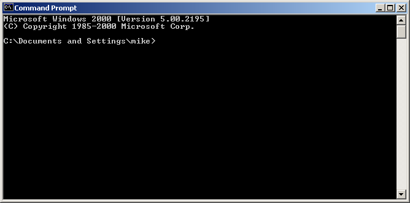
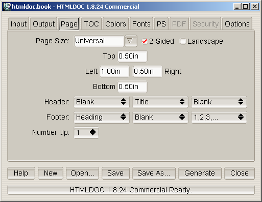

HTMLDOC 1.8.28 Software Users Manual
Michael R Sweet
Copyright 2011, All Rights Reserved.
Introduction
Chapter 1 - Installing HTMLDOC
Chapter 2 - Getting Started
Chapter 3 - Generating Books
Chapter 4 - HTMLDOC from the Command-Line
Chapter 5 - Using HTMLDOC on a Web Server
Chapter 6 - HTML Reference
Chapter 7 - GUI Reference
Chapter 8 - Command-Line Reference
Appendix A - License Agreement
Appendix B - Book File Format
Appendix C - Release Notes
Appendix D - Compiling HTMLDOC from Source
This document describes how to use the HTMLDOC software, version
1.8.28. HTMLDOC converts Hyper-Text Markup Language ("HTML") input
files into indexed HTML, Adobe® PostScript®, or Adobe Portable Document
Format ("PDF") files.
HTMLDOC supports most HTML 3.2 elements, some HTML 4.0 elements, and
can generate title and table of contents pages. It does not currently
support stylesheets.
HTMLDOC can be used as a standalone application, in a batch document
processing environment, or as a web-based report generation
application.
No restrictions are placed upon the output produced by HTMLDOC.
HTMLDOC is open source software under the terms of version 2 of the
GNU General Public License with an exception that allows for
distribution of executables linked to the OpenSSL library.
Like many programs, I developed HTMLDOC in response to a need my
company had for generating high-quality documentation in printed and
electronic forms. For a while I used FrameMaker® and a package from
sgi that generated "compiled" Standard Generalized Markup
Language ("SGML") files that could be used by the Electronic Book
Technologies ("EBT") documentation products; EBT was bought by INSO who
was bought by StellentTM who apparently has dropped the
whole product line. When sgi stopped supporting these
tools I turned to INSO, but the cost of their tools was prohibitive to
my small business.
In the end I decided to write my own program to generate the
documentation. HTML seemed to be the source format of choice since
WYSIWYG HTML editors are widely (and freely) available and at worst you
can use a plain text editor. I needed HTML output for documentation on
my web server, PDF for customers to read and/or print from their
computers, and PostScript for printing needs.
The result of my efforts is the HTMLDOC software which is available
for Linux®/UNIX®, MacOS® X, and Microsoft® Windows®. Among other
things, this software users manual is produced using HTMLDOC.
HTMLDOC used to be available under a commercial end-user license
agreement from my former company, Easy Software Products. While that
company is no longer in business, I continue to maintain and develop
HTMLDOC in my spare time.
This manual is organized into tutorial and reference chapters and
appendices:
HTMLDOC includes code to encrypt PDF document files using the RC4
algorithm with up to a 128-bit key. While this software and code may be
freely used and exported under current US laws, other countries may
restrict your use and possession of this code and software.
HTMLDOC is copyright 2011 by Michael R Sweet. See
Appendix A - License Agreement for the terms of use.
The Adobe Portable Document Format is Copyright 1985-2005 by Adobe
Systems Incorporated. Adobe, FrameMaker, and PostScript are registered
trademarks of Adobe Systems, Incorporated.
The Graphics Interchange Format is the copyright and GIFSM
is the service mark property of CompuServe Incorporated.
Intel is a registered trademark of Intel Corporation.
Linux is a registered trademark of Linus Torvalds.
Mac OS is a registered trademark of Apple Inc.
Microsoft and Windows are registered trademarks of Microsoft
Corporation.
Red Hat and RPM are registered trademarks of Red Hat, Inc.
Solaris is a registered trademark of Sun Microsystems, Inc.
SPARC is a registered trademark of SPARC International, Inc.
UNIX is a registered trademark of the X/Open Company, Ltd.
This software is based in part on the work of the Independent JPEG
Group and FLTK project.
This chapter describes the steps needed to install HTMLDOC on your
system from the source distributions.
HTMLDOC requires C and C++ compilers - recent versions of GCC/LLVM
work fine. To build the GUI you'll also need:
Secure (https) URL support can be enabled via the
OpenSSL or GNU TLS libraries,
among others.
HTMLDOC uses a configuration script produced by GNU autoconf to
configure itself for your system. If your C compiler is not called
cc or gcc, set the CC environment
variable to the name and path of your C compiler:
% setenv CC /path/to/compiler ENTER [C Shell]
% CC=/path/to/compiler; export CC ENTER [Bourne/Korn Shell]
Similarly, if your C++ compiler is not called CC, gcc
, c++, or g++, set the CXX
environment variable to the name and path of your C++ compiler:
% setenv CXX /path/to/compiler ENTER [C Shell]
% CXX=/path/to/compiler; export CXX ENTER [Bourne/Korn Shell]
Then run the following command to configure HTMLDOC for installation
in the default directories:
% ./configure ENTER
The default configuration will install HTMLDOC in the /usr/bin
directory with the data files under /usr/share/htmldoc and
the documentation and on-line help under /usr/share/doc/htmldoc
. Use the --prefix option to change the installation prefix
to a different directory such as /usr/local:
% ./configure --prefix=/usr/local ENTER
If the OpenSSL library is not installed in a standard location for
your compilers, use the --with-openssl-includes and
--with-openssl-libs options to point to the OpenSSL library:
% ./configure --with-openssl-libs=/path/to/openssl/lib \
--with-openssl-includes=/path/to/openssl ENTER
HTMLDOC is built from a Makefile in the distribution's main
directory. Simply run the "make" command to build HTMLDOC:
% make ENTER
If you get any fatal errors, please report them on the htmldoc
mailing list referenced on the
htmldoc.org web site.
Please note the version of HTMLDOC that you are using as well as any
pertinent system information such as the operating system, OS version,
compiler, and so forth. Omitting this information may delay or prevent
a solution to your problem.
Once you have compiled the software successfully, you may install
HTMLDOC by running the following command:
% make install ENTER
If you are installing in a restricted directory like /usr
then you'll need to be logged in as root.
A Visual C++ 2008 workspace file and associated project files are
included in the source distribution under the "visualc" directory. Open
the workspace file "htmldoc.dsw", adjust the FLTK include and project
file locations, and then build the HTMLDOC target.
| Note:
You also need to download the FLTK library in order to compile
HTMLDOC with Visual C++.
|
To install HTMLDOC with Visual C++, open the MSI file that is created
by the Visual C++ solution file. That will populate the necessary
registry entries:
HKEY_LOCAL_MACHINE\Software\HTMLDOC\data- C:\installation\directory
HKEY_LOCAL_MACHINE\Software\HTMLDOC\doc- C:\installation\directory\doc
This chapter describes how to start HTMLDOC and convert HTML files
into PostScript and PDF files.
| Note:
HTMLDOC currently does not support HTML 4.0 features such as
stylesheets or the STYLE, TBODY, THEAD
, or TFOOT elements. For more information, please consult Chapter 6 - HTML Reference.
|
For Windows click:
Start Menu->All Programs->HTMLDOC->HTMLDOC
For MacOS X click:
Applications Folder->HTMLDOC
For Linux click:
Applications Menu->Office->HTMLDOC
or type:
htmldoc ENTER
For Solaris click:
Applications Window->ESP->HTMLDOC
or type:
htmldoc ENTER
The HTMLDOC window (Figure 2-1) shows the list of input files that
will be converted. Start by clicking on the Web Page radio
button (1) to specify that you will be converting a HTML web page file.

Figure 2-1 - The HTMLDOC Window
Then choose a file for conversion by clicking on the Add
Files... button (2). When the file chooser dialog appears (Figure
2-2), double-click on the HTML file (3) you wish to convert from the
list of files. If you don't see the file you wish to add, then double
click on the folder with ../ (4) to see more file options.

Figure 2-2 - The File Chooser Dialog
You've chosen your HTML files to be converted, now you need to save
your file(s) somewhere. The output file is where you would do that.
Click on the Output tab (5) to set the output file (Figure
2-3). You can either type the name of the output file into the
Output Path field or click on the Browse... button (6)
to find an acceptable output location. Clicking on browse allows you to
put the new file in a specific folder for easy retrieval. When you
click on a folder you will notice that the filename area and text is
highlighted. Click a few times at the end of the file name path and add
a slash (/) and the name of the new file. If you don't see
the folder you want to put your document in, double click on the folder
with ../ after it.

Figure 2-3 - The Output Tab
You can generate the document by clicking on the Generate
button (7) at the bottom of the HTMLDOC window. When the conversion is
completed you can open the PDF file that is produced using Adobe
Acrobat Reader or any other PDF viewing application.
| Note:
The Open button at the bottom of the HTMLDOC GUI Open
Window will not open the generated document for viewing. You will learn
about the Open button in later chapters.
|
This chapter describes how to create a book using HTML files.
While HTMLDOC can convert web pages into PostScript and PDF files,
its real strength is generating indexed HTML, PostScript, or PDF books.
HTMLDOC uses HTML heading elements to delineate chapters and headings
in a book. The H1 element is used for chapters:
<HTML>
<HEAD>
<TITLE>The Little Computer that Could</TITLE>
</HEAD>
<BODY>
<H1>Chapter 1 - The Little Computer is Born</H1>
...
<H1>Chapter 2 - Little Computer's First Task</H1>
...
</BODY>
</HTML>
Sub-headings are marked using the H2 through H6
elements.
| Note:
When using book mode, HTMLDOC starts rendering with the first
H1 element. Any text, images, tables, and other viewable elements
that precede the first H1 element are silently ignored.
Because of this, make sure you have an H1 element in your
HTML file, otherwise HTMLDOC will not convert anything.
|
Start by clicking on the Book radio button (1) to specify
you'll be converting one or more HTML files into a book.
Your next step is to choose one or more files for conversion by
clicking on the Add Files... button (2). When the file
chooser dialog appears, pick the file(s) you wish to convert and then
click on the OK button. As discussed in Chapter 2, if you
don't see the file that you want, double click on the folder with
../ after it.
Also, having all files and images in one folder will make file
retrieval much easier.

Figure 3-1: The Input Tab
HTMLDOC can automatically create a title page for you. Fill in the
Title File/Image field or click the Browse... button
(3) to locate the file you want to use. If you don't see the file you
want, double click on the folder with ../ after it.

Figure 3-2: The Output Tab
The output format is set in the Output tab (4). Click on
the Output tab and then click on the HTML,
PS, or PDF radio buttons to set the output format.
Now that you've chosen an output format, type the name of the output
file into the Output Path field or click on the
Browse... button (5) to select the output file using the file
chooser.
Once you have chosen the output file you can generate it by clicking
on the Generate button (6) at the bottom of the HTMLDOC
window.
HTMLDOC can save the list of HTML files, the title file, and all
other options to a special .BOOK file so you can
regenerate your book when you make changes to your HTML files.
Click on the Save button (7) to save the current book to a
file.
This chapter describes how to use HTMLDOC from the command-line to
convert web pages and generate books.
Do the following steps to access the command-line on Windows:
- Click on Start at the bottom left corner of your screen
- Click on All Programs
- Click on Accessories
- Click on Command Prompt
After you have clicked command prompt, your screen should look
something like Figure 4-1.

Figure 4-1: Command prompt window
To see what's in this directory, type the following command:
dir ENTER
You now have a list of available files and directories that you can
use. To access a different directory simply type cd and the
name of the new directory. For example, type the following if you want
to access a directory called Steve:
cd Steve ENTER
To convert a single web page type:
htmldoc --webpage -f output.pdf filename.html ENTER
htmldoc is the name of the software.
--webpage is the document type that specifies unstructured
files with page breaks between each file.
-f output.pdf is the file name that you will save all the
documents into and also the type of file it is. In this example it is a
PDF file.
filename.html is the name of the file that you want to be
converted and the type of file it is. In this example it is a HTML
file.
Try the following exercise: You want to convert the file
myhtml.html into a PDF file. The new file will be called
mypdf.pdf. How would you do this? (Don't worry, it's answered for
you on the next line. But try first.)
To accomplish this type:
htmldoc --webpage -f mypdf.pdf myhtml.html ENTER
To convert more than one web page with page breaks between each HTML
file, type:
htmldoc --webpage -f output.pdf file1.html file2.html ENTER
All we are doing is adding another file. In this example we are
converting two files: file1.html and file2.html.
Try this example: Convert one.html and two.html
into a PDF file named 12pdf.pdf. Again, the answer is on the
next line.
Your line command should look like this:
htmldoc --webpage -f 12pdf.pdf one.html two.html ENTER
We've been using HTML files, but you can also use URLs. For example:
htmldoc --webpage -f output.pdf http://slashdot.org/ ENTER
Type one of the following commands to generate a book from one or
more HTML files:
htmldoc --book -f output.html file1.html file2.html ENTER
htmldoc --book -f output.pdf file1.html file2.html ENTER
htmldoc --book -f output.ps file1.html file2.html ENTER
htmldoc is the name of the sofware.
--book is a type of document that specifies that the input
files are structured with headings.
-f output.html is where you want the converted files to go
to. In this case, we requested the file be a HTML file. We could have
made it a PDF (-f output.pdf) or Postscript (-f ouput.ps
), too.
file1.html and file2.html are the files you want to
convert.
HTMLDOC will build a table of contents for the book using the heading
elements (H1, H2, etc.) in your HTML files.
It will also add a title page using the document TITLE
text (you're going to learn about title files shortly) and other
META information you supply in your HTML files. See
Chapter 6 - HTML Reference for more information on the META
variables that are supported.
| Note:
When using book mode, HTMLDOC starts rendering with the first
H1 element. Any text, images, tables, and other viewable elements
that precede the first H1 element are silently ignored.
Because of this, make sure you have an H1 element in your
HTML file, otherwise HTMLDOC will not convert anything!
|
The --titlefile option sets the HTML file or image to
use on the title page:
htmldoc --titlefile filename.bmp ... ENTER
htmldoc --titlefile filename.gif ... ENTER
htmldoc --titlefile filename.jpg ... ENTER
htmldoc --titlefile filename.png ... ENTER
htmldoc --titlefile filename.html ... ENTER
HTMLDOC supports BMP, GIF, JPEG, and PNG images, as well as generic
HTML text you supply for the title page(s).
htmldoc --book -f 12book.pdf 1book.html 2book.html --titlefile bookcover.jpg ENTER
Take a look at the entire command line. Dissect the information. Can
you see what the new filename is? What are the names of the files being
converted? Do you see the titlepage file? What kind of file is your
titlefile?
Figure it out? The new file is 12book.pdf. The files
converted were 1book.html and 2book.html. A title
page was created using the JPEG image file bookcover.jpg.
Chapter 8 - Command Line Reference digs deeper
into what you can do with the the command line prompt.
This chapter describes how to interface HTMLDOC to your web server
using CGI and your own server-side scripts and programs.
HTMLDOC can be used in a variety of ways to generate formatted
reports on a web server. The most common way is to use HTMLDOC as a CGI
program with your web server to provide PDF-formatted output of a web
page. Examples are provided for Microsoft IIS and the Apache web
servers.
HTMLDOC can also be called from your own server-side scripts and
programs. Examples are provided for PHP and Java.
| WARNING:
Passing information directly from the web browser to HTMLDOC can
potentially expose your system to security risks. Always be sure to
"sanitize" any input from the web browser so that filenames, URLs, and
options passed to HTMLDOC are not acted on by the shell program or
other processes. Filenames with spaces must usually be enclosed with
quotes.
|
HTMLDOC 1.8.24 and higher supports operation as a CGI program. You
can copy or symlink the htmldoc (all but Windows) or
htmldoc.exe (Windows) executable to your web server's
cgi-bin directory and then use it to produce PDF versions of your
web pages.
The CGI converts a page on your local server to PDF and sends it to
the client's web browser. For example, to convert a page called
superproducts.html at the following URL:
http://servername/superproducts.html
and if you installed HTMLDOC in your server's cgi-bin
directory, you would direct your clients to the following URL:
http://servername/cgi-bin/htmldoc/superproducts.html
The boldface portion represents the location of the HTMLDOC
executable on the web server. You simply place that path before the
page you want to convert.
Form data using the GET method can be passed at the end
of the URL, for example:
http://servername/cgi-bin/htmldoc/superproducts.html?name=value
When run as a CGI program, HTMLDOC will try to read a book file to
set any preferences for the conversion to PDF. For the
superproducts.html file described previously, HTMLDOC will look
at the following URLs for a book file:
http://servername/superproducts.html.book
http://servername/.book
http://servername/cgi-bin/.book
The first book file that is found will be used.
The Apache web server is easily configured to use HTMLDOC. The
simplest way is to copy or symlink the htmldoc executable to
the configured cgi-bin directory. For example, if your
Apache installation is configured to look for CGI programs in the
/var/www/cgi-bin directory, the default for Apache on Red Hat
Linux, then the command to install HTMLDOC on your web server would be:
ln -s /usr/bin/htmldoc /var/www/cgi-bin ENTER
If you are using Apache 2.0.30 or higher, you will also need to
enable PATH_INFO support by adding the following line to your
httpd.conf file:
AcceptPathInfo On
Apache also allows you to associate CGI programs with a specific
extension. If you add the following line to your httpd.conf
file:
AddHandler cgi-script .cgi
and enable CGI execution with the Options directive for a
directory:
Options +ExecCGI
then you can copy or symlink the htmldoc executable to an
alternate location. For example, if you have a web directory called
/var/www/htdocs/products, you can install HTMLDOC in this
directory with the following command:
ln -s /usr/bin/htmldoc /var/www/htdocs/products/htmldoc.cgi ENTER
The IIS web server is configured to run CGI programs by either
modifying the permissions of an existing directory or by creating a new
virtual directory that allows for execution of programs. Start by
running the Internet Services Manager program (Figure 5-1):
- Click on Start
- Click on Settings
- Click on Control Panel
- Double-click on Administrative Tools
- Double-click on Internet Services Manager
After the Internet Services Manager window (Figure 5-1)
appears, perform the following steps to add a virtual folder for
HTMLDOC:
- Click on your server in the list to show the default web site
service in the list (Figure 5-2)
- Choose New->Virtual Directory from the Action
menu (Figure 5-3)
- Click Next when the Virtual Directory Creation
Wizard window appears (Figure 5-4)
- Enter the name htmldoc in the Alias field and
click Next (Figure 5-5)
- Enter the HTMLDOC program folder in the Directory field
and click Next (Figure 5-6)
- Check the Execute (such as ISAPI applications or CGI) box
and click Next (Figure 5-7)
- Click Finish to dismiss the wizard (Figure 5-8)
If you are using IIS 6.0, proceed to the next section titled,
"Additional Configuration for IIS 6.0".

Figure 5-1: The Internet Services Manager Window

Figure 5-2: The Default Web Site Service

Figure 5-3: Adding a New Virtual Directory

Figure 5-4: The Virtual Directory Creation Wizard Window

Figure 5-5: Entering the Alias Name

Figure 5-6: Entering the HTMLDOC Program Folder

Figure 5-7: Enabling CGI Mode
Figure 5-8: Completion of IIS Configuration
Once configured, the htmldoc.exe program will be available
in the web server directory. For example, for a virtual directory
called cgi-bin, the PDF converted URL for the
superproducts.html page would be as follows:
http://servername/cgi-bin/htmldoc.exe/superproducts.html
The boldface portion represents the location of the HTMLDOC program
on the web server.
IIS 6.0 requires additional configuration steps due to its increased
focus on security. Start by running the Internet Services Manager
program (Figure 5-1):
- Click on Start
- Click on Settings
- Click on Control Panel
- Double-click on Administrative Tools
- Double-click on Internet Services Manager
After the Internet Services Manager window (Figure 5-1)
appears, perform the following steps to add a new Wed Service Extension
for HTMLDOC:
- Click on Web Service Extensions
- Click Add a new Web Service Extension
- Enter the name "HTMLDOC" when the Web Service Extension
window appears
- Click Add... and choose the htmldoc.exe file
from the program folder, typically
C:\Program Files\Easy Software Products\HTMLDOC
- Check the Set extension status to Allowed box
- Click OK to add the extension and dismiss the window
Finally, double-click the My Computer icon on the desktop
or start the Windows Explorer. When the explorer window
appears, perform the following steps to provide write access to the
Windows temporary folder:
- Open the windows temporary file folder, typically
C:\WINDOWS\TEMP
- Choose Properties from the File menu
- Click on the Security tab
- Click Add..., enter the username for the web server,
typically "SERVER\IUSR_SERVER" where "SERVER" is the name you gave your
server, and click OK
- Click on the username you just added in the list
- Check the Read and Write permissions
- Click OK to save the changes
To make this work the CGI script or program must send the appropriate
HTTP attributes, the required empty line to signify the beginning of
the document, and then execute the HTMLDOC program to generate the
HTML, PostScript, or PDF file as needed. Since HTMLDOC looks for CGI
environment variables when it is run, you must also set the
HTMLDOC_NOCGI environment variable to a value of 1 before running
HTMLDOC from your CGI script or program.
Another way to generate PDF files from your reports is to use HTMLDOC
as a "portal" application. When used as a portal, HTMLDOC automatically
retrieves the named document or report from your server and passes a
PDF version to the web browser. See the next sections for more
information.
Shell scripts are probably the easiest to work with, but are normally
limited to GET type requests. Here is a script called topdf
that acts as a portal, converting the named file to PDF:
#!/bin/sh
#
# Sample "portal" script to convert the named HTML file to PDF on-the-fly.
#
# Usage: http://www.domain.com/path/topdf/path/filename.html
#
#
# Tell HTMLDOC not to run in CGI mode...
#
HTMLDOC_NOCGI=1; export HTMLDOC_NOCGI
#
# The "options" variable contains any options you want to pass to HTMLDOC.
#
options='-t pdf --webpage --header ... --footer ..."
#
# Tell the browser to expect a PDF file...
#
echo "Content-Type: application/pdf"
echo ""
#
# Run HTMLDOC to generate the PDF file...
#
htmldoc $options http://${SERVER_NAME}:${SERVER_PORT}$PATH_INFO
Users of this CGI would reference the URL
"http://www.domain.com/topdf.cgi/index.html" to generate a PDF file of
the site's home page.
The options variable in the script can be set to use any
supported command-line option for HTMLDOC; for a complete list see
Chapter 8 - Command-Line Reference.
Perl scripts offer the ability to generate more complex reports, pull
data from databases, etc. The easiest way to interface Perl scripts
with HTMLDOC is to write a report to a temporary file and then execute
HTMLDOC to generate the PDF file.
Here is a simple Perl subroutine that can be used to write a PDF
report to the HTTP client:
sub topdf {
# Get the filename argument...
my $filename = shift;
# Make stdout unbuffered...
select(STDOUT); $| = 1;
# Tell HTMLDOC not to run in CGI mode...
$ENV{HTMLDOC_NOCGI} = 1;
# Write the content type to the client...
print "Content-Type: application/pdf\n\n";
# Run HTMLDOC to provide the PDF file to the user...
system "htmldoc -t pdf --quiet --webpage $filename";
}
PHP provides a passthru() function that can be used to
run HTMLDOC. This combined with the header() function can
be used to provide on-the-fly reports in PDF format.
Here is a simple PHP function that can be used to convert a HTML
report to PDF and send it to the HTTP client:
function topdf($filename, $options = "") {
# Tell HTMLDOC not to run in CGI mode...
putenv("HTMLDOC_NOCGI=1");
# Write the content type to the client...
header("Content-Type: application/pdf");
flush();
# Run HTMLDOC to provide the PDF file to the user...
passthru("htmldoc -t pdf --quiet --jpeg --webpage $options '$filename'");
}
The function accepts a filename and an optional "options" string for
specifying the header, footer, fonts, etc.
To prevent malicious users from passing in unauthorized characters
into this function, the following function can be used to verify that
the URL/filename does not contain any characters that might be
interpreted by the shell:
function bad_url($url) {
// See if the URL starts with http: or https:...
if (strncmp($url, "http://", 7) != 0 &&
strncmp($url, "https://", 8) != 0) {
return 1;
}
// Check for bad characters in the URL...
$len = strlen($url);
for ($i = 0; $i < $len; $i ++) {
if (!strchr("~_*()/:%?+-&@;=,$.", $url[$i]) &&
!ctype_alnum($url[$i])) {
return 1;
}
}
return 0;
}
Another method is to use the escapeshellarg() function
provided with PHP 4.0.3 and higher to generate a quoted shell argument
for HTMLDOC.
To make a "portal" script, add the following code to complete the
example:
global $SERVER_NAME;
global $SERVER_PORT;
global $PATH_INFO;
global $QUERY_STRING;
if ($QUERY_STRING != "") {
$url = "http://${SERVER_NAME}:${SERVER_PORT}${PATH_INFO}?${QUERY_STRING}";
} else {
$url = "http://${SERVER_NAME}:${SERVER_PORT}$PATH_INFO";
}
if (bad_url($url)) {
print("<html><head><title>Bad URL</title></head>\n"
."<body><h1>Bad URL</h1>\n"
."<p>The URL <b><tt>$url</tt></b> is bad.</p>\n"
."</body></html>\n");
} else {
topdf($url);
}
C programs offer the best flexibility and easily supports on-the-fly
report generation without the need for temporary files.
Here are some simple C functions that can be used to generate a PDF
report to the HTTP client from a temporary file or pipe:
#include <stdio.h>
#include <stdlib.h>
/* topdf() - convert a HTML file to PDF */
FILE *topdf(const char *filename) /* I - HTML file to convert */
{
char command[1024]; /* Command to execute */
/*
* Tell HTMLDOC not to run in CGI mode...
*/
putenv("HTMLDOC_NOCGI=1");
/*
* Write the content type to the client...
*/
puts("Content-Type: application/pdf\n");
/*
* Run HTMLDOC to provide the PDF file to the user...
*/
sprintf(command, "htmldoc --quiet -t pdf --webpage %s", filename);
return (popen(command, "w"));
}
/* topdf2() - pipe HTML output to HTMLDOC for conversion to PDF */
FILE *topdf2(void)
{
/*
* Tell HTMLDOC not to run in CGI mode...
*/
putenv("HTMLDOC_NOCGI=1");
/*
* Write the content type to the client...
*/
puts("Content-Type: application/pdf\n");
/*
* Open a pipe to HTMLDOC...
*/
return (popen("htmldoc --quiet -t pdf --webpage -", "w"));
}
Java programs are a portable way to add PDF support to your web
server. Here is a class called htmldoc that acts as a
portal, converting the named file to PDF. It can also be called by your
Java servlets to process an HTML file and send the result to the client
in PDF format:
class htmldoc
{
// Convert named file to PDF on stdout...
public static int topdf(String filename)// I - Name of file to convert
{
String command; // Command string
Process process; // Process for HTMLDOC
Runtime runtime; // Local runtime object
java.io.InputStream input; // Output from HTMLDOC
byte buffer []; // Buffer for output data
int bytes; // Number of bytes
// First tell the client that we will be sending PDF...
System.out.print("Content-type: application/pdf\n\n");
// Construct the command string
command = "htmldoc --quiet --jpeg --webpage -t pdf --left 36 " +
"--header .t. --footer .1. " + filename;
// Run the process and wait for it to complete...
runtime = Runtime.getRuntime();
try
{
// Create a new HTMLDOC process...
process = runtime.exec(command);
// Get stdout from the process and a buffer for the data...
input = process.getInputStream();
buffer = new byte[8192];
// Read output from HTMLDOC until we have it all...
while ((bytes = input.read(buffer)) > 0)
System.out.write(buffer, 0, bytes);
// Return the exit status from HTMLDOC...
return (process.waitFor());
}
catch (Exception e)
{
// An error occurred - send it to stderr for the web server...
System.err.print(e.toString() + " caught while running:\n\n");
System.err.print(" " + command + "\n");
return (1);
}
}
// Main entry for htmldoc class
public static void main(String[] args)// I - Command-line args
{
String server_name, // SERVER_NAME env var
server_port, // SERVER_PORT env var
path_info, // PATH_INFO env var
query_string, // QUERY_STRING env var
filename; // File to convert
if ((server_name = System.getProperty("SERVER_NAME")) != null &&
(server_port = System.getProperty("SERVER_PORT")) != null &&
(path_info = System.getProperty("PATH_INFO")) != null)
{
// Construct a URL for the resource specified...
filename = "http://" + server_name + ":" + server_port + path_info;
if ((query_string = System.getProperty("QUERY_STRING")) != null)
{
filename = filename + "?" + query_string;
}
}
else if (args.length == 1)
{
// Pull the filename from the command-line...
filename = args[0];
}
else
{
// Error - no args or env variables!
System.err.print("Usage: htmldoc.class filename\n");
return;
}
// Convert the file to PDF and send to the web client...
topdf(filename);
}
}
This chapter defines all of the HTML elements and attributes that are
recognized and supported by HTMLDOC.
There are two types of HTML files - structured documents using
headings (H1, H2, etc.) which HTMLDOC calls "books", and unstructured
documents that do not use headings which HTMLDOC calls "web pages".
A very common mistake is to try converting a web page using:
htmldoc -f filename.pdf filename.html
which will likely produce a PDF file with no pages. To convert web
page files you must use the --webpage option at the
command-line or choose Web Page in the input tab of the GUI.
| Note:
HTMLDOC does not support HTML 4.0 elements, attributes, stylesheets,
or scripting.
|
The following HTML elements are recognized by HTMLDOC:
| Element | Version | Supported? | Notes |
|---|
| !DOCTYPE | 3.0 | Yes |
DTD is ignored |
| A | 1.0 | Yes | See Below |
| ACRONYM | 2.0 | Yes |
No font change |
| ADDRESS | 2.0 | Yes |
|
| AREA | 2.0 | No |
|
| B | 1.0 | Yes |
|
| BASE | 2.0 | No |
|
| BASEFONT | 1.0 | No |
|
| BIG | 2.0 | Yes |
|
| BLINK | 2.0 | No |
|
| BLOCKQUOTE | 2.0 | Yes |
|
| BODY | 1.0 | Yes |
|
| BR | 2.0 | Yes |
|
| CAPTION | 2.0 | Yes |
|
| CENTER | 2.0 | Yes |
|
| CITE | 2.0 | Yes |
Italic/Oblique |
| CODE | 2.0 | Yes |
Courier |
| DD | 2.0 | Yes |
|
| DEL | 2.0 | Yes |
Strikethrough |
| DFN | 2.0 | Yes |
Helvetica |
| DIR | 2.0 | Yes |
|
| DIV | 3.2 | Yes |
|
| DL | 2.0 | Yes |
|
| DT | 2.0 | Yes |
Italic/Oblique |
| EM | 2.0 | Yes |
Italic/Oblique |
| EMBED | 2.0 | Yes |
HTML Only |
| FONT | 2.0 | Yes |
See Below |
| FORM | 2.0 | No |
|
| FRAME | 3.2 | No |
|
| Element | Version | Supported? | Notes |
|---|
| FRAMESET | 3.2 | No |
|
| H1 | 1.0 | Yes |
Boldface, See Below |
| H2 | 1.0 | Yes |
Boldface, See Below |
| H3 | 1.0 | Yes |
Boldface, See Below |
| H4 | 1.0 | Yes |
Boldface, See Below |
| H5 | 1.0 | Yes |
Boldface, See Below |
| H6 | 1.0 | Yes |
Boldface, See Below |
| HEAD | 1.0 | Yes |
|
| HR | 1.0 | Yes |
See Below |
| HTML | 1.0 | Yes |
|
| I | 1.0 | Yes |
|
| IMG | 1.0 | Yes |
See Below |
| INPUT | 2.0 | No |
|
| INS | 2.0 | Yes |
Underline |
| ISINDEX | 2.0 | No |
|
| KBD | 2.0 | Yes |
Courier Bold |
| LI | 2.0 | Yes |
|
| LINK | 2.0 | No |
|
| MAP | 2.0 | No |
|
| MENU | 2.0 | Yes |
|
| META | 2.0 | Yes |
See Below |
| MULTICOL | N3.0 | No |
|
| NOBR | 1.0 | No |
|
| NOFRAMES | 3.2 | No |
|
| OL | 2.0 | Yes |
|
| OPTION | 2.0 | No |
|
| P | 1.0 | Yes |
|
| PRE | 1.0 | Yes |
|
| S | 2.0 | Yes |
Strikethrough |
| SAMP | 2.0 | Yes |
Courier |
| SCRIPT | 2.0 | No |
|
| Element | Version | Supported? | Notes |
|---|
| SELECT | 2.0 | No |
|
| SMALL | 2.0 | Yes |
|
| SPACER | N3.0 | Yes |
|
| STRIKE | 2.0 | Yes |
|
| STRONG | 2.0 | Yes |
Boldface Italic/Oblique |
| SUB | 2.0 | Yes |
Reduced Fontsize |
| SUP | 2.0 | Yes |
Reduced Fontsize |
| TABLE | 2.0 | Yes |
See Below |
| TD | 2.0 | Yes |
|
| TEXTAREA | 2.0 | No |
|
| TH | 2.0 | Yes |
Boldface Center |
| TITLE | 2.0 | Yes |
|
| TR | 2.0 | Yes |
|
| TT | 2.0 | Yes |
Courier |
| U | 1.0 | Yes |
|
| UL | 2.0 | Yes |
|
| VAR | 2.0 | Yes |
Helvetica Oblique |
| WBR | 1.0 | No |
|
HTMLDOC supports many special HTML comments to initiate page breaks,
set the header and footer text, and control the current media options:
<!-- FOOTER LEFT "foo" -->- Sets the left footer text; the test is applied to the current page
if empty, or the next page otherwise.
<!-- FOOTER CENTER "foo" -->- Sets the center footer text; the test is applied to the current page
if empty, or the next page otherwise.
<!-- FOOTER RIGHT "foo" -->- Sets the right footer text; the test is applied to the current page
if empty, or the next page otherwise.
<!-- HALF PAGE -->- Break to the next half page.
<!-- HEADER LEFT "foo" -->- Sets the left header text; the test is applied to the current page
if empty, or the next page otherwise.
<!-- HEADER CENTER "foo" -->- Sets the center header text; the test is applied to the current page
if empty, or the next page otherwise.
<!-- HEADER RIGHT "foo" -->- Sets the right header text; the test is applied to the current page
if empty, or the next page otherwise.
<!-- MEDIA BOTTOM nnn -->- Sets the bottom margin of the page. The "nnn" string can be any
standard measurement value, e.g. 0.5in, 36, 12mm, etc. Breaks to a new
page if the current page is already marked.
<!-- MEDIA COLOR "foo" -->- Sets the media color attribute for the page. The "foo" string is any
color name that is supported by the printer, e.g. "Blue", "White", etc.
Breaks to a new page or sheet if the current page is already marked.
<!-- MEDIA DUPLEX NO -->- Chooses single-sided printing for the page; breaks to a new page or
sheet if the current page is already marked.
<!-- MEDIA DUPLEX YES -->- Chooses double-sided printing for the page; breaks to a new sheet if
the current page is already marked.
<!-- MEDIA LANDSCAPE NO -->- Chooses portrait orientation for the page; breaks to a new page if
the current page is already marked.
<!-- MEDIA LANDSCAPE YES -->- Chooses landscape orientation for the page; breaks to a new page if
the current page is already marked.
<!-- MEDIA LEFT nnn -->- Sets the left margin of the page. The "nnn" string can be any
standard measurement value, e.g. 0.5in, 36, 12mm, etc. Breaks to a new
page if the current page is already marked.
<!-- MEDIA POSITION nnn -->- Sets the media position attribute (input tray) for the page. The
"nnn" string is an integer that usually specifies the tray number.
Breaks to a new page or sheet if the current page is already marked.
<!-- MEDIA RIGHT nnn -->- Sets the right margin of the page. The "nnn" string can be any
standard measurement value, e.g. 0.5in, 36, 12mm, etc. Breaks to a new
page if the current page is already marked.
<!-- MEDIA SIZE foo -->- Sets the media size to the specified size. The "foo" string can be
"Letter", "Legal", "Universal", or "A4" for standard sizes or
"WIDTHxHEIGHTunits" for custom sizes, e.g. "8.5x11in"; breaks to a new
page or sheet if the current page is already marked.
<!-- MEDIA TOP nnn -->- Sets the top margin of the page. The "nnn" string can be any
standard measurement value, e.g. 0.5in, 36, 12mm, etc. Breaks to a new
page if the current page is already marked.
<!-- MEDIA TYPE "foo" -->- Sets the media type attribute for the page. The "foo" string is any
type name that is supported by the printer, e.g. "Plain", "Glossy",
etc. Breaks to a new page or sheet if the current page is already
marked.
<!-- NEED length -->- Break if there is less than
length units left on the
current page. The length value defaults to lines of text
but can be suffixed by in, mm, or cm
to convert from the corresponding units.
<!-- NEW PAGE -->- Break to the next page.
<!-- NEW SHEET -->- Break to the next sheet.
<!-- NUMBER-UP nn -->- Sets the number of pages that are placed on each output page. Valid
values are 1, 2, 4, 6, 9, and 16.
<!-- PAGE BREAK -->- Break to the next page.
The HEADER and FOOTER comments allow you to
set an arbitrary string of text for the left, center, and right headers
and footers. Each string consists of plain text; special values or
strings can be inserted using the dollar sign ($):
$$- Inserts a single dollar sign in the header.
$CHAPTER- Inserts the current chapter heading.
$CHAPTERPAGE$CHAPTERPAGE(format)- Inserts the current page number within a chapter or file. When a
format is specified, uses that numeric format (1 = decimal, i =
lowercase roman numerals, I = uppercase roman numerals, a = lowercase
ascii, A = uppercase ascii) for the page numbers.
$CHAPTERPAGES$CHAPTERPAGES(format)- Inserts the total page count within a chapter or file. When a format
is specified, uses that numeric format (1 = decimal, i = lowercase
roman numerals, I = uppercase roman numerals, a = lowercase ascii, A =
uppercase ascii) for the page count.
$DATE- Inserts the current date.
$HEADING- Inserts the current heading.
$LOGOIMAGE- Inserts the logo image; all other text in the string will be
ignored.
$PAGE$PAGE(format)- Inserts the current page number. When a format is specified, uses
that numeric format (1 = decimal, i = lowercase roman numerals, I =
uppercase roman numerals, a = lowercase ascii, A = uppercase ascii) for
the page numbers.
$PAGES$PAGES(format)- Inserts the total page count. When a format is specified, uses that
numeric format (1 = decimal, i = lowercase roman numerals, I =
uppercase roman numerals, a = lowercase ascii, A = uppercase ascii) for
the page count.
$TIME- Inserts the current time.
$TITLE- Inserts the document title.
Limited typeface specification is currently supported to ensure
portability across platforms and for older PostScript printers:
| Requested Font | Actual Font |
|---|
| Arial | Helvetica |
| Courier | Courier |
| Dingbats | Dingbats |
| Helvetica | Helvetica |
| Monospace | DejaVu Sans Mono |
| Sans | DejaVu Sans |
| Serif | DejaVu Serif |
| Symbol | Symbol |
| Times | Times |
All other unrecognized typefaces are silently ignored.
Currently HTMLDOC supports a maximum of 1000 chapters (H1 headings).
This limit can be increased by changing the MAX_CHAPTERS
constant in the config.h file included with the source code.
All chapters start with a top-level heading (H1) markup. Any headings
within a chapter must be of a lower level (H2 to H15). Each chapter
starts a new page or the next odd-numbered page if duplexing is
selected.
| Note:
Heading levels 7 to 15 are not standard HTML and will not likely be
recognized by most web browsers.
|
The headings you use within a chapter must start at level 2 (H2). If
you skip levels the heading will be shown under the last level that was
known. For example, if you use the following hierarchy of headings:
<H1>Chapter Heading</H1>
...
<H2>Section Heading 1</H2>
...
<H2>Section Heading 2</H2>
...
<H3>Sub-Section Heading 1</H3>
...
<H4>Sub-Sub-Section Heading 1</H4>
...
<H4>Sub-Sub-Section Heading 2</H4>
...
<H3>Sub-Section Heading 2</H3>
...
<H2>Section Heading 3</H2>
...
<H4>Sub-Sub-Section Heading 3</H4>
...
the table-of-contents that is generated will show:
Chapter Heading
- Section Heading 1
- Section Heading 2
- Sub-Section Heading 1
- Sub-Sub-Section Heading 1
- Sub-Sub-Section Heading 2
- Sub-Section Heading 2
- Sub-Sub-Section Heading 3
- Section Heading 3
When the numbered headings option is enabled, HTMLDOC recognizes the
following additional attributes for all heading elements:
VALUE="#"- Specifies the starting value for this heading level (default is "1"
for all new levels).
TYPE="1"- Specifies that decimal numbers should be generated for this heading
level.
TYPE="a"- Specifies that lowercase letters should be generated for this
heading level.
TYPE="A"- Specifies that uppercase letters should be generated for this
heading level.
TYPE="i"- Specifies that lowercase roman numerals should be generated for this
heading level.
TYPE="I"- Specifies that uppercase roman numerals should be generated for this
heading level.
HTMLDOC supports loading of BMP, GIF, JPEG, and PNG image files. EPS
and other types of image files are not supported at this time.
External URL and internal (#target and
filename.html) links are fully supported for HTML and PDF output.
When generating PDF files, local PDF file links will be converted to
external file links for the PDF viewer instead of URL links. That is,
you can directly link to another local PDF file from your HTML document
with:
<A HREF="filename.pdf">...</A>
HTMLDOC supports the following META attributes for the
title page and document information:
<META NAME="AUTHOR" CONTENT="..."- Specifies the document author.
<META NAME="COPYRIGHT" CONTENT="..."- Specifies the document copyright.
<META NAME="DOCNUMBER" CONTENT="..."- Specifies the document number.
<META NAME="GENERATOR" CONTENT="..."- Specifies the application that generated the HTML file.
<META NAME="KEYWORDS" CONTENT="..."- Specifies document search keywords.
<META NAME="SUBJECT" CONTENT="..."- Specifies document subject.
HTMLDOC supports four new
page comments to
specify page breaks. In addition, the older
BREAK
attribute is still supported by the
HR element:
<HR BREAK>
Support for the
BREAK attribute is deprecated and will be
removed in a future release of HTMLDOC.
Currently HTMLDOC supports a maximum of 200 columns within a single
table. This limit can be increased by changing the
MAX_COLUMNS
constant in the
config.h file included with the source code.
HTMLDOC does not support HTML 4.0 table elements or attributes,
such as TBODY, THEAD, TFOOT, or
RULES.
This chapter describes all of the GUI controls in HTMLDOC.
The HTMLDOC GUI (Figures 7-1 through 7-11) is contained in a single
window showing the input, output, and generation options. At the bottom
are buttons to load, save, and generate documents.
HTMLDOC stores the HTML files, settings, and options in
.BOOK
files. The buttons on the bottom of the HTMLDOC window allow you to
manage these files and generate formatted documents.
The
New button starts a new document. A confirmation dialog
will appear if you have not saved the changes to the existing document.
The
Open... button retrieves a document that you have saved
previously. A
file chooser dialog is
displayed that allows you to pick an existing book file.
The
Save button saves the current document. A
file chooser dialog is displayed if there is no filename assigned to
the current document.
Note: Saving a document is not the same as generating a
document. The book files saved to disk by the Save and
Save As... buttons are not the final HTML, PDF,
or PostScript output files. You generate those files by clicking on the
Generate button.
The
Save As... button saves the current document to a new
file. A
file chooser dialog is displayed to
allow you to specify the new document filename.
Note: Saving a document is not the same as generating a
document. The book files saved to disk by the Save and
Save As... buttons are not the final HTML, PDF,
or PostScript output files. You generate those files by clicking on the
Generate button.
The
Generate button generates the current document, creating
the specified HTML, PDF, or PostScript file(s) as needed. The progress
meter at the bottom of the window will show the progress as each page
or file is formatted and written.
Note: Generating a document is not the same as saving
a document. To save the current HTML files and settings in the HTMLDOC
GUI, click on the Save or Save As... buttons
instead.
The
Close button closes the HTMLDOC window.

Figure 7-1 - The Input Tab
The input tab (Figure 7-1) lists all of the HTML source files that are
used to generate the document. You also specify the type of document
(book or web page) and the title and logo images in this tab.
The
Book radio button specifies that the input files are
structured with headings. The
Continuous radio button
specifies unstructured files without page breaks between each file. The
Web Page radio button specifies unstructured files with page
breaks between each file.
The
Input Files list shows all of the HTML input files that
will be used to produce the document. Double-click on files to edit
them.
The
Add Files... button displays the
file chooser dialog, allowing you to select one or more HTML files
to include in the document.
The
Edit Files... button starts the specified editor program
to edit the files selected in the
Input Files list. Select
one or more files in the
Input Files list to enable the
Edit Files... button.
The
Delete Files button removes the selected files from the
Input Files list. Select one or more files in the
Input
Files list to enable the
Delete Files button.
The Delete Files button only removes the files from the
Input Files list. The files are not removed from
disk.
The
Move Up button moves the selected files in the
Input Files list up one line in the list. To enable the
Move
Up button select one or more files in the
Input Files
list.
The
Move Down button moves the selected files in the
Input Files list down one line in the list. To enable the
Move Down button select one or more files in the
Input Files
list.
The
Logo Image field contains the filename for an image to
be shown in the header or footer of pages, and in the navigation bar of
HTML files.
Click on the Browse... button to select a logo image file
using the file chooser dialog.
The
Title File/Image field contains the filename for an
image to be shown on the title page, or for a HTML file to be used for
the title page(s).
Click on the Browse... button to select a title file using
the file chooser dialog.

Figure 7-2 - The Output Tab
The output tab (Figure 7-2) specifies where your document will be
generated, the output format, and some of the generic output options.
The
File radio button selects output to a single file. The
Directory radio button selects output to multiple files in the
named directory.
Directory output is not available when generating PDF
files.
The
Output Path field contains the output directory or
filename. Click on the
Browse... button to choose an output
file using the
file chooser dialog.
The
HTML radio button selects HTML output, the
Separated HTML radio button selects HTML output that is separated
into a separate file for each heading in the table-of-contents, the
PS radio button selects PostScript output, and the
PDF
radio button selects PDF output.
The
Grayscale check box selects grayscale output for
PostScript and PDF files. The
Title Page check box specifies
that a title page should be generated for the document. The
JPEG
Big Images check box specifies that JPEG compression should be
applied to continuous-tone images.
The
Compression slider controls the amount of compression
that is used when writing PDF or Level 3 PostScript output.
Note: HTMLDOC uses Flate compression, which is not encumbered
by patents and is also used by the popular PKZIP and gzip programs.
Flate is a lossless compression algorithm (that is, you get back
exactly what you put in) that performs very well on indexed images and
text.
The
JPEG Quality slider controls the quality level used when
writing continuous-tone images with JPEG compression.

Figure 7-3 - The Page Tab
The page tab (Figure 7-3) defines the page header, footer, size, and
margins for PostScript and PDF output.
The
Page Size field contains the current page size. Click on
the arrow button to choose a standard page size.
HTMLDOC supports the following standard page size names:
- Letter - 8.5x11in (216x279mm)
- A4 - 8.27x11.69in (210x297mm)
- Universal - 8.27x11in (210x279mm)
Click in the Page Size field and enter the page width and
length separated by the letter "x" to select a custom page size. Append
the letters "in" for inches, "mm" for millimeters, or "cm" for
centimeters.
Click in the
2-Sided check box to select 2-sided (duplexed)
output.
Click in the
Landscape check box to select landscape output.
Click in the
Top,
Left,
Right, and
Bottom fields and enter the new margin values to change them.
Append the letters "in" for inches, "mm" for millimeters, or "cm" for
centimeters.
Select the desired text in each of the option buttons to customize
the header and footer for the document/body pages. The left-most option
buttons set the text that is left-justified, while the middle buttons
set the text that is centered and the right buttons set the text that
is right-justified. Each choice corresponds to the following text:
| Choice | Description |
|---|
| Blank | The field should be blank. |
| Title | The field should contain the
document title. |
| Chapter Title | The field should contain
the current chapter title. |
| Heading | The field should contain the
current heading. |
| Logo | The field should contain the logo
image. |
| 1,2,3,... | The field should contain the
current page number in decimal format (1, 2, 3, ...) |
| i,ii,iii,... | The field should contain the
current page number in lowercase roman numerals (i, ii, iii, ...) |
| I,II,III,... | The field should contain the
current page number in uppercase roman numerals (I, II, III, ...) |
| a,b,c,... | The field should contain the
current page number using lowercase letters. |
| A,B,C,... | The field should contain the
current page number using UPPERCASE letters. |
| Chapter Page | The field should contain the
current chapter page number. |
| 1/N,2/N,... | The field should contain the
current and total number of pages (n/N). |
| 1/C,2/C,... | The field should contain the
current and total number of pages in the chapter (n/N). |
| Date | The field should contain the current
date (formatted for the current locale). |
| Time | The field should contain the current
time (formatted for the current locale). |
| Date + Time | The field should contain the
current date and time (formatted for the current locale). |

Figure 7-4 - The TOC Tab
The TOC tab (Figure 7-4) defines the table-of-contents options.
Select the desired number of levels from the
Table of Contents
option button.
Click in the
Numbered Headings check box to automatically
number the headings in the document.
Select the desired text in each of the option buttons to customize the
header and footer for the tables-of-contents pages. The left-most
option buttons set the text that is left-justified, while the middle
buttons set the text that is centered and the right buttons set the
text that is right-justified.
Enter the desired title for the table-of-contents in the
Title
field.

Figure 7-5 - The Colors Tab
The colors tab (Figure 7-5) defines the color and image information
that is used for the entire document.
The
Body Color field specifies the default background color.
It can be a standard HTML color name or a hexadecimal RGB color of the
form
#RRGGBB. Click on the
Lookup... button to
pick the color graphically.
The
Body Image field specifies the default background image.
Click on the
Browse... button to pick the background image
using the
file chooser.
The
Text Color field specifies the default text color. It
can be a standard HTML color name or a hexadecimal RGB color of the
form
#RRGGBB. Click on the
Lookup... button to
pick the color graphically.
The
Link Color field specifies the default link color. It
can be a standard HTML color name or a hexadecimal RGB color of the
form
#RRGGBB. Click on the
Lookup... button to
pick the color graphically.
The
Link Style chooser specifies the default link
decoration.

Figure 7-6 - The Fonts Tab
The fonts tab (Figure 7-6) defines the fonts and character set used by
the document.
The
Base Font Size field specifies the size of normal text
in the document in points (1 point = 1/72nd inch). Click on the single
arrow buttons to decrease or increase the size by 1/10th point or on
the double arrow buttons to decrease or increase the size by whole
points.
The
Line Spacing field specifies the spacing between lines
as a multiple of the base font size. Click on the single arrow buttons
to decrease or increase the size by 10ths or on the double arrow
buttons to decrease or increase the size by whole numbers.
The
Body Typeface option button specifies the typeface to
use for normal text. Click on the option button to select a typeface.
The
Heading Typeface option button specifies the typeface to
use for headings. Click on the option button to select a typeface.
The
Header/Footer Size field specifies the size of header
and footer text in the document in points (1 point = 1/72nd inch).
Click on the single arrow buttons to decrease or increase the size by
1/10th point or on the double arrow buttons to decrease or increase the
size by whole points.
The
Header/Footer Font option button specifies the typeface
and style to use for header and footer text. Click on the option button
to select a typeface and style.
The
Character Set option button specifies the encoding of
characters in the document. Click on the option button to select a
character set.
The Embed Fonts check box controls whether or not fonts
are embedded in PostScript and PDF output.

Figure 7-7 - The PS Tab
The PS tab (Figure 7-7) contains options specific to PostScript output.
Click on one of the
Level radio buttons to select the
language level to generate. PostScript Level 1 is compatible with all
PostScript printers and will produce the largest output files.
PostScript Level 2 is compatible with most PostScript printers and
supports printer commands and JPEG image compression.
PostScript Level 3 is compatible with only the newest PostScript
printers and supports Flate image compression in addition to the Level
2 features.
The
Send Printer Commands check box controls whether or not
the output files contain PostScript
setpagedevice commands
for the page size and duplex settings. Click in the check box to enable
or disable printer commands.
Printer commands are only available with Level 2 and 3 output and may
not work with some printers.
The Include Xerox Job Comments check box controls whether
or not the output files contain Xerox job comments. Click in the check
box to enable or disable the job comments.
Job comments are available with all levels of PostScript output.

Figure 7-8 - The PDF Tab
The PDF tab (Figure 7-8) contains settings specific to PDF output.
The
PDF Version radio buttons control what version of PDF is
generated. PDF 1.4 is the most commonly supported version. Click on the
corresponding radio button to set the version.
The
Page Mode option button controls the initial viewing
mode for the document. Click on the option button to set the page mode.
The Document page mode displays only the document pages.
The Outline page mode displays the table-of-contents outline
as well as the document pages. The Full-Screen page mode
displays the document pages on the whole screen; this mode is used
primarily for presentations.
The
Page Layout option button controls the initial layout of
document pages on the screen. Click on the option button to set the
page layout.
The Single page layout displays a single page at a time.
The One Column page layout displays a single column of pages
at a time. The Two Column Left and Two Column Right
page layouts display two columns of pages at a time; the first page is
displayed in the left or right column as selected.
The
First Page option button controls the initial page that
is displayed. Click on the option button to choose the first page.
The
Page Effect option button controls the page effect that
is displayed in
Full-Screen mode. Click on the option button
to select a page effect.
The
Page Duration slider controls the number of seconds that
each page will be visible in
Full-Screen mode. Drag the
slider to adjust the number of seconds.
The
Effect Duration slider controls the number of seconds
that the page effect will last when changing pages. Drag the slider to
adjust the number of seconds.

Figure 7-9 - The Security Tab
The security tab (Figure 7-9) allows you to enable PDF document
encryption and security features.
The Encryption buttons control whether or not encryption
is performed on the PDF file. Encrypted documents can be password
protected and also provide user permissions.
The Permissions buttons control what operations are
allowed by the PDF viewer.
The Owner Password field contains the document owner
password, a string that is used by Adobe Acrobat to control who can
change document permissions, etc.
If this field is left blank, a random 32-character password is
generated so that no one can change the document using the Adobe tools.
The Include Links option controls whether or not the
internal links in a document are included in the PDF output. The
document outline (shown to the left of the document in Acrobat Reader)
is unaffected by this setting.
The User Password field contains the document user
password, a string that is used by Adobe Acrobat to restrict viewing
permissions on the file.
If this field is left blank, any user may view the document without
entering a password.

Figure 7-10 - The Options Tab
The options tab (Figure 7-10) contains the HTML file editor of your
choice and allows you to save the settings and options that will be
used in new documents.
The HTML Editor field contains the name of the HTML editor
to run when you double-click on an input file or click on the Edit
Files... button. Enter the program name in the field or click on
the Browse... button to select the editor using the
file chooser.
The %s is added automatically to the end of the command
name to insert the name of the file to be edited. If you are using
Netscape Composer to edit your HTML files you should put "-edit" before
the %s to tell Netscape to edit the file and not display
it.
The Browser Width slider specifies the width of the
browser in pixels that is used to scale images and other pixel
measurements to the printable page width. You can adjust this value to
more closely match the formatting on the screen.
The default browser width is 680 pixels which corresponds roughly to
a 96 DPI display. The browser width is only used when generating
PostScript or PDF files.
The Search Path field specifies a search path for files
that are loaded by HTMLDOC. It is usually used to get images that use
absolute server paths to load.
Directories are separated by the semicolon (;) so that drive letters
(and eventually URLs) can be specified.
The Proxy URL field specifies a URL for a HTTP proxy
server.
The Tooltips check button controls the appearance of
tooltip windows over GUI controls.
The Modern Look check button controls the appearance of
the GUI controls.
The Strict HTML check button controls strict HTML
conformance checking. When checked, HTML elements that are improperly
nested and dangling close elements will produce error messages.
The Save Options and Defaults button saves the HTML editor
and all of the document settings on the other tabs for use in new
documents. These settings are also used by the command-line version of
HTMLDOC.

Figure 7-11 - The File Chooser
The file chooser (Figure 7-11) allows you to select one or more files
and create files and directories.
The Show option button (1) selects which files are
displayed in the file list (3). Click on the option button to choose a
different type of file.
The Favorites button (2) allow you to view a specific
directory or add the current directory to your list of favorites.
The file list (3) lists the files and directories in the current
directory or folder. Double-click on a file or directory to select that
file or directory. Drag the mouse or hold the CTRL key down
while clicking to select multiple files.
The Filename field contains the currently selected
filename. Type a name in the field to select a file or directory. As
you type, any matching filenames will be highlighted; press the
TAB key to accept the matches.
The button bar along the top of the filename allows you to view each
directory in the filename. Click on any of the segments to display the
corresponding directory.
The dialog buttons (5) close the file chooser dialog window. Click on
the OK button to accept your selections or the Cancel
button to reject your selections and cancel the file operation.
This chapter describes all of the command-line options supported by
HTMLDOC.
The basic command-line usage for HTMLDOC is:
% htmldoc options filename1.html ... filenameN.html ENTER
% htmldoc options filename.book ENTER
The first form converts the named HTML files to the specified output
format immediately. The second form loads the specified .book
file and displays the HTMLDOC window, allowing a user to make changes
and/or generate the document interactively.
If no output file or directory is specified, then all output is sent
to the standard output file.
On return, HTMLDOC returns and exit code of 0 if it was successful
and non-zero if there were errors.
The following command-line options are recognized by HTMLDOC.
The -d option specifies an output directory for the
document files.
This option is not compatible with the PDF output format.
The -f option specifies an output file for the document.
The -t option specifies the output format for the
document and can be one of the following:
| Format | Description |
|---|
| html | Generate one or more indexed HTML files. |
| htmlsep | Generate separate HTML files for each heading in
the table-of-contents. |
| pdf | Generate a PDF file (default version - 1.4). |
| pdf11 | Generate a PDF 1.1 file for Acrobat Reader 2.0 and
later. |
| pdf12 | Generate a PDF 1.2 file for Acrobat Reader 3.0 and
later. |
| pdf13 | Generate a PDF 1.3 file for Acrobat Reader 4.0 and
later. |
| pdf14 | Generate a PDF 1.4 file for Acrobat Reader 5.0 and
later. |
| ps | Generate one or more PostScript files (default level
- 2). |
| ps1 | Generate one or more Level 1 PostScript files. |
| ps2 | Generate one or more Level 2 PostScript files. |
| ps3 | Generate one or more Level 3 PostScript files. |
The -v option specifies that progress information should
be sent/displayed to the standard error file.
The --batch option specifies a book file that you would
like to generate without the GUI popping up. This option can be
combined with other options to generate the same book in different
formats and sizes:
% htmldoc --batch filename.book -f filename.ps ENTER
% htmldoc --batch filename.book -f filename.pdf ENTER
The --bodycolor option specifies the background color
for all pages in the document. The color can be specified by a standard
HTML color name or as a 6-digit hexadecimal number of the form
#RRGGBB.
The --bodyfont option specifies the default text font
used for text in the document body. The typeface parameter
can be one of the following:
| typeface | Actual Font |
|---|
| Arial | Helvetica |
| Courier | Courier |
| Helvetica | Helvetica |
| Monospace | DejaVu Sans Mono |
| Sans | DevaVu Sans |
| Serif | DejaVu Serif |
| Times | Times |
The --bodyimage option specifies the background image
for all pages in the document. The supported formats are BMP, GIF,
JPEG, and PNG.
The --book option specifies that the input files
comprise a book with chapters and headings.
The --bottom option specifies the bottom margin. The
default units are points (1 point = 1/72nd inch); the suffixes "in",
"cm", and "mm" specify inches, centimeters, and millimeters,
respectively.
This option is only available when generating PostScript or PDF
files.
The --browserwidth option specifies the browser width in
pixels. The browser width is used to scale images and pixel
measurements when generating PostScript and PDF files. It does not
affect the font size of text.
The default browser width is 680 pixels which corresponds roughly to
a 96 DPI display. Please note that your images and table sizes are
equal to or smaller than the browser width, or your output will overlap
or truncate in places.
The --charset option specifies the 8-bit character set
encoding to use for the entire document. HTMLDOC comes with the
following character set files:
| charset | Character Set |
|---|
| cp-874 | Windows code page 874 |
| cp-1250 | Windows code page 1250 |
| cp-1251 | Windows code page 1251 |
| cp-1252 | Windows code page 1252 |
| cp-1253 | Windows code page 1253 |
| cp-1254 | Windows code page 1254 |
| cp-1255 | Windows code page 1255 |
| cp-1256 | Windows code page 1256 |
| cp-1257 | Windows code page 1257 |
| cp-1258 | Windows code page 1258 |
| iso-8859-1 | ISO-8859-1 |
| iso-8859-2 | ISO-8859-2 |
| iso-8859-3 | ISO-8859-3 |
| iso-8859-4 | ISO-8859-4 |
| iso-8859-5 | ISO-8859-5 |
| iso-8859-6 | ISO-8859-6 |
| iso-8859-7 | ISO-8859-7 |
| iso-8859-8 | ISO-8859-8 |
| iso-8859-9 | ISO-8859-9 |
| iso-8859-14 | ISO-8859-14 |
| iso-8859-15 | ISO-8859-15 |
| koi8-r | KOI8-R |
The --color option specifies that color output is
desired.
This option is only available when generating PostScript or PDF
files.
The --compression option specifies that Flate
compression should be performed on the output file(s). The optional
level parameter is a number from 1 (fastest and least amount of
compression) to 9 (slowest and most amount of compression).
This option is only available when generating PDF or Level 3
PostScript files.
The --continuous option specifies that the input files
comprise a web page (or site) and that no title page or
table-of-contents should be generated. Unlike the --webpage
option described later in this chapter, page breaks are not inserted
between each input file.
This option is only available when generating PostScript or PDF
files.
The --cookies option specifies one or more HTTP cookies
that should be sent when converting remote URLs. Each cookie must be
separated from the others by a semicolon and a space, and values
containing whitespace or the semicolon must be placed inside
double-quotes. When specifying multiple cookies, the entire cookie
string must be surrounded by single quotes in order for the string to
be processed correctly.
The --datadir option specifies the location of data
files used by HTMLDOC.
The --duplex option specifies that the output should be
formatted for two sided printing.
This option is only available when generating PostScript or PDF
files. Use the --pscommands option to generate PostScript
duplex mode commands.
The --effectduration option specifies the duration of a
page transition effect in seconds.
This option is only available when generating PDF files.
The --embedfonts option specifies that fonts should be
embedded in PostScript and PDF output. This is especially useful when
generating documents in character sets other than ISO-8859-1.
The --encryption option enables encryption and security
features for PDF output.
This option is only available when generating PDF files.
The --firstpage option specifies the first page that
will be displayed in a PDF file. The page parameter can be
one of the following:
| page | Description |
|---|
| p1 | The first page of the document. |
| toc | The first page of the table-of-contents. |
| c1 | The first page of chapter 1. |
This option is only available when generating PDF files.
The --fontsize option specifies the base font size for
the entire document in points (1 point = 1/72nd inch).
The --fontspacing option specifies the line spacing for
the entire document as a multiplier of the base font size. A
spacing value of 1 makes each line of text the same height as the
font.
The --footer option specifies the contents of the page
footer. The lcr parameter is a three-character string
representing the left, center, and right footer fields. Each character
can be one of the following:
| lcr | Description |
|---|
| . | A period indicates that the field
should be blank. |
| : | A colon indicates that the field should
contain the current and total number of pages in the chapter (n/N). |
| / | A slash indicates that the field should
contain the current and total number of pages (n/N). |
| 1 | The number 1 indicates that the field
should contain the current page number in decimal format (1, 2, 3, ...) |
| a | A lowercase "a" indicates that the
field should contain the current page number using lowercase letters. |
| A | An uppercase "A" indicates that the
field should contain the current page number using UPPERCASE letters. |
| c | A lowercase "c" indicates that the
field should contain the current chapter title. |
| C | An uppercase "C" indicates that the
field should contain the current chapter page number. |
| d | A lowercase "d" indicates that the
field should contain the current date. |
| D | An uppercase "D" indicates that the
field should contain the current date and time. |
| h | An "h" indicates that the field should
contain the current heading. |
| i | A lowercase "i" indicates that the
field should contain the current page number in lowercase roman
numerals (i, ii, iii, ...) |
| I | An uppercase "I" indicates that the
field should contain the current page number in uppercase roman
numerals (I, II, III, ...) |
| l | A lowercase "l" indicates that the
field should contain the logo image. |
| t | A lowercase "t" indicates that the
field should contain the document title. |
| T | An uppercase "T" indicates that the
field should contain the current time. |
Setting the footer to "..." disables the footer
entirely.
The --format option specifies the output format for the
document and can be one of the following:
| Format | Description |
|---|
| html | Generate one or more indexed HTML files. |
| htmlsep | Generate separate HTML files for each heading in
the table-of-contents. |
| pdf | Generate a PDF file (default version - 1.4). |
| pdf11 | Generate a PDF 1.1 file for Acrobat Reader 2.0 and
later. |
| pdf12 | Generate a PDF 1.2 file for Acrobat Reader 3.0 and
later. |
| pdf13 | Generate a PDF 1.3 file for Acrobat Reader 4.0 and
later. |
| pdf14 | Generate a PDF 1.4 file for Acrobat Reader 5.0 and
later. |
| ps | Generate one or more PostScript files (default level
- 2). |
| ps1 | Generate one or more Level 1 PostScript files. |
| ps2 | Generate one or more Level 2 PostScript files. |
| ps3 | Generate one or more Level 3 PostScript files. |
The --gray option specifies that grayscale output is
desired.
This option is only available when generating PostScript or PDF
files.
The --header option specifies the contents of the page
header. The lcr parameter is a three-character string
representing the left, center, and right header fields. See the
--footer option for the list of formatting characters.
Setting the header to "..." disables the header
entirely.
The --headfootfont option specifies the font that is
used for the header and footer text. The font parameter
can be one of the following:
- Courier
- Courier-Bold
- Courier-Oblique
- Courier-BoldOblique
- Helvetica
- Helvetica-Bold
- Helvetica-Oblique
- Helvetica-BoldOblique
- Monospace
- Monospace-Bold
- Monospace-Oblique
- Monospace-BoldOblique
- Sans
- Sans-Bold
- Sans-Oblique
- Sans-BoldOblique
- Serif
- Serif-Roman
- Serif-Bold
- Serif-Italic
- Serif-BoldItalic
- Times
- Times-Roman
- Times-Bold
- Times-Italic
- Times-BoldItalic
This option is only available when generating PostScript or PDF
files.
The --headfootsize option sets the size of the header
and footer text in points (1 point = 1/72nd inch).
This option is only available when generating PostScript or PDF
files.
The --headingfont options sets the typeface that is used
for headings in the document. The typeface parameter can
be one of the following:
| typeface | Actual Font |
|---|
| Arial | Helvetica |
| Courier | Courier |
| Helvetica | Helvetica |
| Monospace | DejaVu Sans Mono |
| Sans | DevaVu Sans |
| Serif | DejaVu Serif |
| Times | Times |
The --help option displays all of the available options
to the standard output file.
The --helpdir option specifies the location of the
on-line help files.
The --jpeg option enables JPEG compression of
continuous-tone images. The optional quality parameter
specifies the output quality from 0 (worst) to 100 (best).
This option is only available when generating PDF or Level 2 and
Level 3 PostScript files.
The --landscape option specifies that the output should
be in landscape orientation (long edge on top).
This option is only available when generating PostScript or PDF
files.
The --left option specifies the left margin. The default
units are points (1 point = 1/72nd inch); the suffixes "in", "cm", and
"mm" specify inches, centimeters, and millimeters, respectively.
This option is only available when generating PostScript or PDF
files.
The --linkcolor option specifies the color of links in
HTML and PDF output. The color can be specified by name or as a 6-digit
hexadecimal number of the form #RRGGBB.
The --links option specifies that PDF output should
contain hyperlinks.
The --linkstyle option specifies the style of links in
HTML and PDF output. The style can be "plain" for no decoration or
"underline" to underline links.
The --logoimage option specifies the logo image for the
HTML navigation bar and page headers and footers for PostScript and PDF
files. The supported formats are BMP, GIF, JPEG, and PNG.
| Note:
You need to use the --header and/or --footer
options with the l parameter or use the corresponding HTML
page comments to display the logo image in the header or footer.
The following example uses the --header option:
htmldoc --logoimage image.png --header lt. -f file.pdf file.html
|
The --no-compression option specifies that Flate
compression should not be performed on the output files.
The --no-duplex option specifies that the output should
be formatted for one sided printing.
This option is only available when generating PostScript or PDF
files. Use the --pscommands option to generate PostScript
duplex mode commands.
The --no-embedfonts option specifies that fonts should
not be embedded in PostScript and PDF output.
The --no-encryption option specifies that no
encryption/security features should be enabled in PDF output.
This option is only available when generating PDF files.
The --no-jpeg option specifies that JPEG compression
should not be performed on large images.
The --no-links option specifies that PDF output should
not contain hyperlinks.
The --no-localfiles option disables access to local
files on the system. This option should be used when providing remote
document conversion services.
The --no-numbered option specifies that headings should
not be numbered.
The --no-pscommands option specifies that PostScript
device commands should not be written to the output files.
The --no-strict option turns off strict HTML conformance
checking.
The --no-title option specifies that the title page
should not be generated.
The --no-toc option specifies that the table-of-contents
pages should not be generated.
The --no-xrxcomments option specifies that Xerox
PostScript job comments should not be written to the output files.
This option is only available when generating PostScript files.
The --numbered option specifies that headings should be
numbered.
The --nup option sets the number of pages that are
placed on each output page. Valid values for the pages
parameter are 1, 2, 4, 6, 9, and 16.
The --outdir option specifies an output directory for
the document files.
This option is not compatible with the PDF output format.
The --outfile option specifies an output file for the
document.
The --owner-password option specifies the owner password
for a PDF file. If not specified or the empty string (""), a random
password is generated.
This option is only available when generating PDF files.
The --pageduration option specifies the number of
seconds that each page will be displayed in the document.
This option is only available when generating PDF files.
The --pageeffect option specifies the page effect to use
in PDF files. The effect parameter can be one of the
following:
| effect | Description |
|---|
| none | No effect is generated. |
| bi | Box Inward |
| bo | Box Outward |
| d | Dissolve |
| gd | Glitter Down |
| gdr | Glitter Down and Right |
| gr | Glitter Right |
| hb | Horizontal Blinds |
| hsi | Horizontal Sweet Inward |
| hso | Horizontal Sweep Outward |
| vb | Vertical Blinds |
| vsi | Vertical Sweep Inward |
| vso | Vertical Sweep Outward |
| wd | Wipe Down |
| wl | Wipe Left |
| wr | Wipe Right |
| wu | Wipe Up |
This option is only available when generating PDF files.
The --pagelayout option specifies the initial page
layout in the PDF viewer. The layout parameter can be one
of the following:
| layout | Description |
|---|
| single | A single page is displayed. |
| one | A single column is displayed. |
| twoleft | Two columns are displayed with the first page on
the left. |
| tworight | Two columns are displayed with the first page
on the right. |
This option is only available when generating PDF files.
The --pagemode option specifies the initial viewing mode
in the PDF viewer. The mode parameter can be one of the
following:
| mode | Description |
|---|
| document | The document pages are displayed in a normal
window. |
| outline | The document outline and pages are displayed. |
| fullscreen | The document pages are displayed on the
entire screen in "slideshow" mode. |
This option is only available when generating PDF files.
The --path option specifies a search path for files that
are loaded by HTMLDOC. It is usually used to get images that use
absolute server paths to load.
Directories are separated by the semicolon (;) so that drive letters
and URLs can be specified. Quotes around the directory parameter are
optional. They are usually used when the directory string contains
spaces.
--path "dir1;dir2;dir3;...;dirN"
The --permissions option specifies the document
permissions. The available permission parameters are listed below:
| Permission | Description |
|---|
| all | All permissions |
| annotate | User can annotate document |
| copy | User can copy text and images from document |
| modify | User can modify document |
| print | User can print document |
| no-annotate | User cannot annotate document |
| no-copy | User cannot copy text and images from document |
| no-modify | User cannot modify document |
| no-print | User cannot print document |
| none | No permissions |
The --encryption option must be used in conjunction with
the --permissions parameter.
--permissions no-print --encryption
Multiple options can be specified by separating them with commas:
--permissions no-print,no-copy --encryption
This option is only available when generating PDF files.
The --portrait option specifies that the output should
be in portrait orientation (short edge on top).
This option is only available when generating PostScript or PDF
files.
The --pscommands option specifies that PostScript device
commands should be written to the output files.
This option is only available when generating Level 2 and Level 3
PostScript files.
The --quiet option prevents error messages from being
sent to stderr.
The --referer option sets the URL that is passed in the
Referer: field of HTTP requests.
The --right option specifies the right margin. The
default units are points (1 point = 1/72nd inch); the suffixes "in",
"cm", and "mm" specify inches, centimeters, and millimeters,
respectively.
This option is only available when generating PostScript or PDF
files.
The --size option specifies the page size. The
size parameter can be one of the following standard sizes:
| size | Description |
|---|
| Letter | 8.5x11in (216x279mm) |
| A4 | 8.27x11.69in (210x297mm) |
| Universal | 8.27x11in (210x279mm) |
Custom sizes are specified by the page width and length separated by
the letter "x" to select a custom page size. Append the letters "in"
for inches, "mm" for millimeters, or "cm" for centimeters.
This option is only available when generating PostScript or PDF
files. Use the --pscommands option to generate PostScript
page size commands.
The --strict option turns on strict HTML conformance
checking. When enabled, HTML elements that are improperly nested and
dangling close elements will produce error messages.
The --textcolor option specifies the default text color
for all pages in the document. The color can be specified by a standard
HTML color name or as a 6-digit hexadecimal number of the form
#RRGGBB.
The --textfont options sets the typeface that is used
for text in the document. The typeface parameter can be
one of the following:
| typeface | Actual Font |
|---|
| Arial | Helvetica |
| Courier | Courier |
| Helvetica | Helvetica |
| Monospace | DejaVu Sans Mono |
| Sans | DevaVu Sans |
| Serif | DejaVu Serif |
| Times | Times |
The --title option specifies that a title page should be
generated.
The --titlefile option specifies a HTML file to use for
the title page.
The --titleimage option specifies the title image for
the title page. The supported formats are BMP, GIF, JPEG, and PNG.
The --tocfooter option specifies the contents of the
table-of-contents footer. The lcr parameter is a
three-character string representing the left, center, and right footer
fields. See the --footer option for
the list of formatting characters.
Setting the TOC footer to "..." disables the TOC footer
entirely.
The --tocheader option specifies the contents of the
table-of-contents header. The lcr parameter is a
three-character string representing the left, center, and right header
fields. See the --footer option for
the list of formatting characters.
Setting the TOC header to "..." disables the TOC header
entirely.
The --toclevels options specifies the number of heading
levels to include in the table-of-contents pages. The levels
parameter is a number from 1 to 6.
The --toctitle options specifies the string to display
at the top of the table-of-contents; the default string is "Table of
Contents".
The --top option specifies the top margin. The default
units are points (1 point = 1/72nd inch); the suffixes "in", "cm", and
"mm" specify inches, centimeters, and millimeters, respectively.
This option is only available when generating PostScript or PDF
files.
The --user-password option specifies the user password
for a PDF file. If not specified or the empty string (""), no password
will be required to view the document.
This option is only available when generating PDF files.
The --verbose option specifies that progress information
should be sent/displayed to the standard error file.
The --version option displays the HTMLDOC version
number.
The --webpage option specifies that the input files
comprise a web page (or site) and that no title page or
table-of-contents should be generated. HTMLDOC will insert a page break
between each input file.
This option is only available when generating PostScript or PDF
files.
The --xrxcomments option specifies that Xerox PostScript
job comments should be written to the output files.
This option is only available when generating PostScript files.
HTMLDOC looks for several environment variables which can override
the default directories, display additional debugging information, and
disable CGI mode.
This environment variable specifies the location of HTMLDOC's
data and fonts directories, normally
/usr/share/htmldoc or C:\Program Files\HTMLDOC.
This environment variable enables debugging information that is sent
to stderr. The value is a list of keywords separated by spaces:
| keyword | Information Shown |
|---|
links | Shows all of the links in a document |
memory | Shows memory usage statistics |
remotebytes | Shows the number of bytes that
were transferred via HTTP |
table | Puts a box around each table, row,
and cell |
tempfiles | Shows the temporary files that
were created, and preserves them for debugging |
timing | Shows the load and render times |
all | All of the above |
This environment variable specifies the location of HTMLDOC's
documentation directory, normally /usr/share/doc/htmldoc or
C:\Program Files\Easy Software Products\HTMLDOC\doc.
This environment variable, when set (the value doesn't matter),
disables CGI mode. It is most useful for using HTMLDOC on a web server
from a scripting language or invocation from a program.
HTMLDOC sends error and status messages to stderr unless the
--quiet option is provided on the command-line. Applications can
capture these messages to relay errors or statistics to the user.
The BYTES: message specifies the number of bytes that
were written to an output file. If the output is directed at a
directory then multiple BYTES: messages will be sent.
The DEBUG: messages contain debugging information based
on the value of the HTMLDOC_DEBUG environment variable.
Normally, no DEBUG: messages are sent by HTMLDOC.
The ERRnnn: messages specify an error condition. Error
numbers 1 to 14 map to the following errors:
- No files were found or loadable.
- No pages were generated.
- The document contains too many files or chapters.
- HTMLDOC ran out of memory.
- The specified file could not be found.
- The comment contains a bad HTMLDOC formatting command.
- The image file is not in a known format.
- HTMLDOC was unable to remove a temporary file.
- HTMLDOC had an unspecified internal error.
- HTMLDOC encountered a networking error when retrieving a file via a
URL.
- HTMLDOC was unable to read a file.
- HTMLDOC was unable to write a file.
- A HTML error was found in a source file.
- A table, image, or text fragment was too large to fit in the space
provided.
- A hyperlink in the source files was unresolved.
- A header/footer string in the document contains a bad $ command.
Error numbers 100 to 505 correspond directly to a HTTP status code.
The INFO: messages contain general information that is
logged when HTMLDOC is running in CGI mode or when you use the
--verbose option.
The PAGES: message specifies the number of pages that
were written to an output file. If the output is directed at a
directory then multiple PAGES: messages will be sent. No
PAGES: messages are sent when generating HTML output.
The REMOTEBYTES: message specifies the number of bytes
that were transferred using HTTP. This message is only displayed if the
HTMLDOC_DEBUG environment variable has the keyword
remotebytes or all.
The TIMING: message specifies the load, render, and
total time in seconds for the current command. This message is only
displayed if the HTMLDOC_DEBUG environment variable has
the keyword timing or all.
HTMLDOC License
December 21, 2011
HTMLDOC is provides under the terms of version 2 of the GNU General
Public License with the following exception:
- HTMLDOC may be compiled against and distributed with the OpenSSL
Toolkit. No developer is required to provide this exception in a
derived work.
GNU GENERAL PUBLIC LICENSE
Version 2, June 1991
Copyright 1989, 1991 Free Software Foundation, Inc.
59 Temple Place, Suite 330, Boston, MA 02111-1307 USA
Everyone is permitted to copy and distribute verbatim
copies of this license document, but changing it is not allowed.
Preamble
The licenses for most software are designed to take away your freedom
to share and change it. By contrast, the GNU General Public License is
intended to guarantee your freedom to share and change free
software--to make sure the software is free for all its users. This
General Public License applies to most of the Free Software
Foundation's software and to any other program whose authors commit to
using it. (Some other Free Software Foundation software is covered by
the GNU Library General Public License instead.) You can apply it to
your programs, too.
When we speak of free software, we are referring to freedom, not
price. Our General Public Licenses are designed to make sure that you
have the freedom to distribute copies of free software (and charge for
this service if you wish), that you receive source code or can get it
if you want it, that you can change the software or use pieces of it in
new free programs; and that you know you can do these things.
To protect your rights, we need to make restrictions that forbid
anyone to deny you these rights or to ask you to surrender the rights.
These restrictions translate to certain responsibilities for you if you
distribute copies of the software, or if you modify it.
For example, if you distribute copies of such a program, whether
gratis or for a fee, you must give the recipients all the rights that
you have. You must make sure that they, too, receive or can get the
source code. And you must show them these terms so they know their
rights.
We protect your rights with two steps: (1) copyright the software,
and (2) offer you this license which gives you legal permission to
copy, distribute and/or modify the software.
Also, for each author's protection and ours, we want to make certain
that everyone understands that there is no warranty for this free
software. If the software is modified by someone else and passed on, we
want its recipients to know that what they have is not the original, so
that any problems introduced by others will not reflect on the original
authors' reputations.
Finally, any free program is threatened constantly by software
patents. We wish to avoid the danger that redistributors of a free
program will individually obtain patent licenses, in effect making the
program proprietary. To prevent this, we have made it clear that any
patent must be licensed for everyone's free use or not licensed at all.
The precise terms and conditions for copying, distribution and
modification follow.
GNU GENERAL PUBLIC LICENSE
TERMS AND CONDITIONS FOR COPYING, DISTRIBUTION AND MODIFICATION
- This License applies to any program or other work which contains a
notice placed by the copyright holder saying it may be distributed
under the terms of this General Public License. The "Program", below,
refers to any such program or work, and a "work based on the Program"
means either the Program or any derivative work under copyright law:
that is to say, a work containing the Program or a portion of it,
either verbatim or with modifications and/or translated into another
language. (Hereinafter, translation is included without limitation in
the term "modification".) Each licensee is addressed as "you".
Activities other than copying, distribution and modification are not
covered by this License; they are outside its scope. The act of running
the Program is not restricted, and the output from the Program is
covered only if its contents constitute a work based on the Program
(independent of having been made by running the Program). Whether that
is true depends on what the Program does.
- You may copy and distribute verbatim copies of the Program's source
code as you receive it, in any medium, provided that you conspicuously
and appropriately publish on each copy an appropriate copyright notice
and disclaimer of warranty; keep intact all the notices that refer to
this License and to the absence of any warranty; and give any other
recipients of the Program a copy of this License along with the
Program.
You may charge a fee for the physical act of transferring a copy, and
you may at your option offer warranty protection in exchange for a fee.
- You may modify your copy or copies of the Program or any portion of
it, thus forming a work based on the Program, and copy and distribute
such modifications or work under the terms of Section 1 above, provided
that you also meet all of these conditions:
- You must cause the modified files to carry prominent notices stating
that you changed the files and the date of any change.
- You must cause any work that you distribute or publish, that in
whole or in part contains or is derived from the Program or any part
thereof, to be licensed as a whole at no charge to all third parties
under the terms of this License.
- if the modified program normally reads commands interactively when
run, you must cause it, when started running for such interactive use
in the most ordinary way, to print or display an announcement including
an appropriate copyright notice and a notice that there is no warranty
(or else, saying that you provide a warranty) and that users may
redistribute the program under these conditions, and telling the user
how to view a copy of this License. (Exception: if the Program itself
is interactive but does not normally print such an announcement, your
work based on the Program is not required to print an announcement.)
These requirements apply to the modified work as a whole. If
identifiable sections of that work are not derived from the Program,
and can be reasonably considered independent and separate works in
themselves, then this License, and its terms, do not apply to those
sections when you distribute them as separate works. But when you
distribute the same sections as part of a whole which is a work based
on the Program, the distribution of the whole must be on the terms of
this License, whose permissions for other licensees extend to the
entire whole, and thus to each and every part regardless of who wrote
it.
Thus, it is not the intent of this section to claim rights or contest
your rights to work written entirely by you; rather, the intent is to
exercise the right to control the distribution of derivative or
collective works based on the Program.
In addition, mere aggregation of another work not based on the
Program with the Program (or with a work based on the Program) on a
volume of a storage or distribution medium does not bring the other
work under the scope of this License.
- You may copy and distribute the Program (or a work based on it,
under Section 2) in object code or executable form under the terms of
Sections 1 and 2 above provided that you also do one of the following:
- Accompany it with the complete corresponding machine-readable source
code, which must be distributed under the terms of Sections 1 and 2
above on a medium customarily used for software interchange; or,
- Accompany it with a written offer, valid for at least three years,
to give any third party, for a charge no more than your cost of
physically performing source distribution, a complete machine-readable
copy of the corresponding source code, to be distributed under the
terms of Sections 1 and 2 above on a medium customarily used for
software interchange; or,
- Accompany it with the information you received as to the offer to
distribute corresponding source code. (This alternative is allowed only
for noncommercial distribution and only if you received the program in
object code or executable form with such an offer, in accord with
Subsection b above.)
The source code for a work means the preferred form of the work for
making modifications to it. For an executable work, complete source
code means all the source code for all modules it contains, plus any
associated interface definition files, plus the scripts used to control
compilation and installation of the executable. However, as a special
exception, the source code distributed need not include anything that
is normally distributed (in either source or binary form) with the
major components (compiler, kernel, and so on) of the operating system
on which the executable runs, unless that component itself accompanies
the executable.
If distribution of executable or object code is made by offering
access to copy from a designated place, then offering equivalent access
to copy the source code from the same place counts as distribution of
the source code, even though third parties are not compelled to copy
the source along with the object code.
- You may not copy, modify, sublicense, or distribute the Program
except as expressly provided under this License. Any attempt otherwise
to copy, modify, sublicense or distribute the Program is void, and will
automatically terminate your rights under this License. However,
parties who have received copies, or rights, from you under this
License will not have their licenses terminated so long as such parties
remain in full compliance.
- You are not required to accept this License, since you have not
signed it. However, nothing else grants you permission to modify or
distribute the Program or its derivative works. These actions are
prohibited by law if you do not accept this License. Therefore, by
modifying or distributing the Program (or any work based on the
Program), you indicate your acceptance of this License to do so, and
all its terms and conditions for copying, distributing or modifying the
Program or works based on it.
- Each time you redistribute the Program (or any work based on the
Program), the recipient automatically receives a license from the
original licensor to copy, distribute or modify the Program subject to
these terms and conditions. You may not impose any further restrictions
on the recipients' exercise of the rights granted herein. You are not
responsible for enforcing compliance by third parties to this License.
- If, as a consequence of a court judgment or allegation of patent
infringement or for any other reason (not limited to patent issues),
conditions are imposed on you (whether by court order, agreement or
otherwise) that contradict the conditions of this License, they do not
excuse you from the conditions of this License. If you cannot
distribute so as to satisfy simultaneously your obligations under this
License and any other pertinent obligations, then as a consequence you
may not distribute the Program at all. For example, if a patent license
would not permit royalty-free redistribution of the Program by all
those who receive copies directly or indirectly through you, then the
only way you could satisfy both it and this License would be to refrain
entirely from distribution of the Program.
If any portion of this section is held invalid or unenforceable under
any particular circumstance, the balance of the section is intended to
apply and the section as a whole is intended to apply in other
circumstances.
It is not the purpose of this section to induce you to infringe any
patents or other property right claims or to contest validity of any
such claims; this section has the sole purpose of protecting the
integrity of the free software distribution system, which is
implemented by public license practices. Many people have made generous
contributions to the wide range of software distributed through that
system in reliance on consistent application of that system; it is up
to the author/donor to decide if he or she is willing to distribute
software through any other system and a licensee cannot impose that
choice.
This section is intended to make thoroughly clear what is believed to
be a consequence of the rest of this License.
- If the distribution and/or use of the Program is restricted in
certain countries either by patents or by copyrighted interfaces, the
original copyright holder who places the Program under this License may
add an explicit geographical distribution limitation excluding those
countries, so that distribution is permitted only in or among countries
not thus excluded. In such case, this License incorporates the
limitation as if written in the body of this License.
- The Free Software Foundation may publish revised and/or new versions
of the General Public License from time to time. Such new versions will
be similar in spirit to the present version, but may differ in detail
to address new problems or concerns.
Each version is given a distinguishing version number. If the Program
specifies a version number of this License which applies to it and "any
later version", you have the option of following the terms and
conditions either of that version or of any later version published by
the Free Software Foundation. If the Program does not specify a version
number of this License, you may choose any version ever published by
the Free Software Foundation.
- If you wish to incorporate parts of the Program into other free
programs whose distribution conditions are different, write to the
author to ask for permission. For software which is copyrighted by the
Free Software Foundation, write to the Free Software Foundation; we
sometimes make exceptions for this. Our decision will be guided by the
two goals of preserving the free status of all derivatives of our free
software and of promoting the sharing and reuse of software generally.
NO WARRANTY
- BECAUSE THE PROGRAM IS LICENSED FREE OF CHARGE, THERE IS NO WARRANTY
FOR THE PROGRAM, TO THE EXTENT PERMITTED BY APPLICABLE LAW. EXCEPT WHEN
OTHERWISE STATED IN WRITING THE COPYRIGHT HOLDERS AND/OR OTHER PARTIES
PROVIDE THE PROGRAM "AS IS" WITHOUT WARRANTY OF ANY KIND, EITHER
EXPRESSED OR IMPLIED, INCLUDING, BUT NOT LIMITED TO, THE IMPLIED
WARRANTIES OF MERCHANTABILITY AND FITNESS FOR A PARTICULAR PURPOSE. THE
ENTIRE RISK AS TO THE QUALITY AND PERFORMANCE OF THE PROGRAM IS WITH
YOU. SHOULD THE PROGRAM PROVE DEFECTIVE, YOU ASSUME THE COST OF ALL
NECESSARY SERVICING, REPAIR OR CORRECTION.
- IN NO EVENT UNLESS REQUIRED BY APPLICABLE LAW OR AGREED TO IN
WRITING WILL ANY COPYRIGHT HOLDER, OR ANY OTHER PARTY WHO MAY MODIFY
AND/OR REDISTRIBUTE THE PROGRAM AS PERMITTED ABOVE, BE LIABLE TO YOU
FOR DAMAGES, INCLUDING ANY GENERAL, SPECIAL, INCIDENTAL OR
CONSEQUENTIAL DAMAGES ARISING OUT OF THE USE OR INABILITY TO USE THE
PROGRAM (INCLUDING BUT NOT LIMITED TO LOSS OF DATA OR DATA BEING
RENDERED INACCURATE OR LOSSES SUSTAINED BY YOU OR THIRD PARTIES OR A
FAILURE OF THE PROGRAM TO OPERATE WITH ANY OTHER PROGRAMS), EVEN IF
SUCH HOLDER OR OTHER PARTY HAS BEEN ADVISED OF THE POSSIBILITY OF SUCH
DAMAGES.
END OF TERMS AND CONDITIONS
How to Apply These Terms to Your New Programs
If you develop a new program, and you want it to be of the greatest
possible use to the public, the best way to achieve this is to make it
free software which everyone can redistribute and change under these
terms.
To do so, attach the following notices to the program. It is safest
to attach them to the start of each source file to most effectively
convey the exclusion of warranty; and each file should have at least
the "copyright" line and a pointer to where the full notice is found.
one line to give the program's name and an idea of what it does.
Copyright (C) yyyy name of author
This program is free software; you can redistribute it and/or
modify it under the terms of the GNU General Public License
as published by the Free Software Foundation; either version 2
of the License, or (at your option) any later version.
This program is distributed in the hope that it will be useful,
but WITHOUT ANY WARRANTY; without even the implied warranty of
MERCHANTABILITY or FITNESS FOR A PARTICULAR PURPOSE. See the
GNU General Public License for more details.
You should have received a copy of the GNU General Public License
along with this program; if not, write to the Free Software
Foundation, Inc., 59 Temple Place - Suite 330, Boston, MA 02111-1307, USA.
Also add information on how to contact you by electronic and paper
mail.
If the program is interactive, make it output a short notice like
this when it starts in an interactive mode:
Gnomovision version 69, Copyright (C) year name of author
Gnomovision comes with ABSOLUTELY NO WARRANTY; for details
type `show w'. This is free software, and you are welcome
to redistribute it under certain conditions; type `show c'
for details.
The hypothetical commands `show w' and `show c'
should show the appropriate parts of the General Public License. Of
course, the commands you use may be called something other than
`show w' and `show c'; they could even be
mouse-clicks or menu items--whatever suits your program.
You should also get your employer (if you work as a programmer) or
your school, if any, to sign a "copyright disclaimer" for the program,
if necessary. Here is a sample; alter the names:
Yoyodyne, Inc., hereby disclaims all copyright
interest in the program `Gnomovision'
(which makes passes at compilers) written
by James Hacker.
signature of Ty Coon, 1 April 1989
Ty Coon, President of Vice
This appendix describes the HTMLDOC .book file format.
The HTMLDOC .book file format is a simple text format that
provides the command-line options and files that are part of the
document. These files can be used from the GUI interface or from the
command-line using the --batch option:
htmldoc filename.book
htmldoc --batch filename.book
The first form will load the book and display the GUI interface, if
configured. Windows users should use ghtmldoc.exe executable
to show the GUI and htmldoc.exe for the batch mode:
ghtmldoc.exe filename.book
htmldoc.exe --batch filename.book
Each .book file starts with a line reading:
#HTMLDOC 1.8.17
The version number (1.8.17) is optional.
Following the header is a line containing the options for the book.
You can use any valid command-line option on this line:
-f htmldoc.pdf --titleimage htmldoc.png --duplex --compression=9 --jpeg=90
Long option lines can be broken using a trailing backslash (\
) on the end of each continuation line:
-f htmldoc.pdf --titleimage htmldoc.png --duplex \
--compression=9 --jpeg=90
Following the options are a list of files or URLs to include in the
document:
intro.html
1-install.html
2-starting.html
3-books.html
4-cmdline.html
5-cgi.html
6-htmlref.html
7-guiref.html
8-cmdref.html
a-license.html
b-book.html
c-relnotes.html
The following is the complete book file needed to generate this
documentation:
#HTMLDOC 1.8.13
-f htmldoc.pdf --titleimage htmldoc.png --duplex --compression=9 --jpeg=90
intro.html
1-install.html
2-starting.html
3-books.html
4-cmdline.html
5-cgi.html
6-htmlref.html
7-guiref.html
8-cmdref.html
a-license.html
b-book.html
c-relnotes.html
Prior to HTMLDOC version 1.8.12, the book file format was slightly
different:
#HTMLDOC version
file count
file(s)
options
While HTMLDOC still supports reading this format, we do not recommend
using it for new books. In particular, when generating a document using
the --batch option, some options may not be applied
correctly since the files are loaded prior to setting the output
options in the old format.
This appendix provides the release notes for each version of HTMLDOC.
- Updated local zlib to version 1.2.3.
- Updated local PNG library to version 1.4.0.
- Updated local JPEG library to version 7.
- Updated default PDF version to 1.4.
- SECURITY: Fixed three buffer overflow issues when reading AFM files
and parsing page sizes.
- Fixed incompatibility with Fortify's version of strcpy, which does
not work properly with variable-length arrays (STR #235)
- Fixed documentation errors (PR #6593, PR #6595)
- Marked Zapf-Dingbats as a standard font (STR #198)
- Fixed GPL license text in GUI (STR #222)
- Fixed a table formatting problem when a column has multiple colspan
values (PR #6709)
- Fixed parsing of HTML comments (STR #181)
- Fixed potential out-of-bounds read in table-of-contents rendering
code (STR #183)
- Fixed handling of image URLs with ampersands in them (STR #186)
- Fixed top/bottom margins for logo and header/footer images (STR
#174)
- Fixed a crash bug that appeared when more than 10 blank pages were
present in a document (PR #6223)
- Color changes were not reflected in PRE text (STR #129)
- Remote URLs did not always work on older operating systems (PR
#6179)
- Image filenames using % escapes were not decoded properly.
- Rows using BGCOLOR that spanned across multiple pages did not render
properly (PR #6149)
- Rows no longer start on a new page due to a cell with both HEIGHT
and ROWSPAN specified (PR #6086)
- CMYK JPEG images caused HTMLDOC to crash (PR #6106)
- Table cell width calculations didn't always account for the proper
minimum width (STR #121)
- Images were not copied when generating indexed HTML output to a
directory (STR #117)
- Changing the bottom margin resulted in text that was formatted below
the bottom margin.
- The Monospace-Oblique font was not embedded properly in PDF files.
- Outline and keyword strings in PDF files are now stored as Unicode
(STR #113)
- The Flate compression code could get in an infinite loop if it ran
out of memory (STR #101)
- Book files saved from the GUI did not handle filenames with spaces
(STR #105)
- Fixed and re-enabled the ASCII85Device filter support in PostScript
Level 2/3 output (STR #116)
- Character entities in the first word of a file were not rendered
properly (STR #111)
- Fixed-size table columns were incorrectly resized when a table width
was also specified and there was extra space to distribute (PR #6062)
- Text could "walk" up or down when in-line images were used (PR
#6034)
- Row backgrounds incorrectly replaced cell backgrounds when the first
cell in a row used ROWSPAN (PR #6033, PR #6036)
- HTMLDOC did not correctly parse FONT FACE attributes (PR #6006)
- Images in Level 2/3 PostScript output did not work on some printers
(PR #6000)
- The GUI did not use the first page header (PR #5978)
- Added "--overflow" and "--no-overflow" command-line options to show
or hide the content-too-large errors; the default is "--no-overflow".
- Added "--header1" command-line option and "HEADER1" page comments to
set the page header for the first page of each chapter.
- Added "timing" and "remotebytes" debug data generation.
- Added DejaVu font collection to better support Cyrillic and Greek
text; the new fonts are available under the generic names "monospace",
"sans", and "serif".
- Added "--referer" command-line option and corresponding CGI-mode
support to pass Referer: information in HTTP requests (STR #91)
- On Windows, HTMLDOC now logs CGI mode errors to a file called
"htmldoc.log" in the Windows temporary directory.
- HTMLDOC no longer uses Base-85 encoding for image data when
producing Level 2 and 3 PostScript output. It appears that many
printers and PostScript interpreters cannot properly decode this data
when the original image data is not a multiple of 8 bits.
- HTMLDOC now renders STRONG elements in boldface instead of
bold-italic to match the W3C recommendations.
- HTMLDOC now automatically inserts a TR element before a TD or TH
element as needed to improve web site compatibility; this also triggers
a HTML error in --strict mode.
- "$HFIMAGEn" didn't work in a header/footer string.
- HTMLDOC could crash when rendering a table.
- Book files were not used in CGI mode (STR #69)
- Cookies were not sent in HTTP requests (STR #71)
- Table cells were not aligned properly when the ROWSPAN attribute was
set to 1 (STR #73)
- HTMLDOC crashed when rendering unresolved hyperlinks in aligned
images (STR #62)
- Documented the HTMLDOC_NOCGI environment variable (STR #63)
- HTMLDOC sometimes crashed when rendering tables with background
colors (STR #65)
- HTMLDOC would crash when writing encrypted strings longer than 1024
bytes (STR #66)
- HTMLDOC didn't set the data directory when running in CGI mode on
Windows.
- HTMLDOC could crash when loading the Symbol.afm file (STR #93)
- HTMLDOC did not always honor HEIGHT attributes in table rows.
- Tables with a mix of colspan and rowspan sometimes caused cells to
be moved vertically outside the cell.
- HTMLDOC now provides limited cookie support via the "--cookies"
command-line option and via the cookies passed by a browser in CGI
mode.
- HTMLDOC now features a CGI mode which provides PDF conversion
functionality for web servers.
- HTMLDOC now generates a document outline for each input file or URL
in webpage mode; the outline shows the title for the file and links to
the first page containing that file.
- HTMLDOC now offers an "htmlsep" output type which generates HTML
output with a separate file for each heading in the table of contents.
- HTMLDOC now includes LINK elements in generated HTML so that
intelligent browsers like Mozilla can show next/prev/contents/top
buttons.
- HTMLDOC now supports the BORDERCOLOR attribute for tables, a MSIE
extension.
- The "strict HTML" mode now reports unresolved local links.
- Added support for HP LaserJet 5000 and Xerox DocuPrint 2000/100
printer commands.
- Added multiple header/footer image support.
- Links to external URLs are now resolved so that the output file can
be moved without affecting them.
- The command-line now allows --fontsize values from 4 to 26 to match
the GUI.
- Now use a 0.001 point tolerance when checking for content that
overflows the page/cell.
- HTMLDOC no longer enables interpolation of 2-color images.
- The default vertical alignment of images is "BOTTOM" to match the
HTML specification.
- Paragraph spacing is only applied to the first table after a
paragraph.
- The tabloid media size was 10 points too short in length.
- The table formatter now subtracts the outside border and padding
widths for percentage-based widths. This helps to eliminate "truncation
or overlapping" errors.
- Dropped support for FLTK 1.0.x when building the GUI.
- The default vertical alignment is now "bottom" inside paragraphs to
correctly align different sized text and images to the baseline.
- Indexed images are now written as PDF image objects when encryption
is enabled; this works around a serious bug in Acrobat 6 which tries to
decrypt the colormap of in-line images twice, causing some very strange
colors!
- Table captions can now be bottom aligned.
- Blocks now break at the bottom of a page if the current line height
+ standard line height goes below the bottom of the page; this prevents
images with captions from getting erroneously moved to the top of the
next page.
- Character entities are now supported in HTML attributes and unknown
or invalid character entities are left as plain text.
- Changed handling of NOWRAP for some tables.
- The --permissions option now supports multiple permission keywords
in a single invocation.
- Dropped support for MacOS 9 and earlier.
- HTMLDOC now breaks between images that are too large to fit on a
single line, to match the behavior of Mozilla/Netscape (STR #7).
- HTMLDOC now handles XHTML input more cleanly.
- HTMLDOC no longer specifies an interpolation preference for images
in PostScript or PDF output (STR #8)
- The DT element no longer applies an italic style (PR #5178)
- HTMLDOC now ignores content inside a STYLE element (PR #5183)
- Switching between landscape and portrait orientations would cause
margin creepage.
- Images did not default to align=bottom, and the align=bottom line
spacing calculation was incorrect.
- Whitespace before a link was underlined.
- Fixed a table column sizing bug.
- HTMLDOC didn't read back the HTTP response properly in all
situations.
- Fixed some more PNG transparency cases.
- The PageBoundingBox comments in PostScript output did not account
for the back page when duplexing was enabled.
- HTMLDOC generated an incorrect image mask for some images.
- The first page of each chapter did not use the custom page number if
it was placed inside the heading.
- HTMLDOC did not reset the rendering cache before each page when
producing N-up output; this caused font errors in some cases that
prevented the document from printing or displaying properly.
- Eliminated a common cause of "table too wide" formatting errors,
- Fixed a bug when applying a table background color to a cell without
a border that cross a page boundary.
- Fixed some calls to strcpy with overlapping arguments.
- The names object was never set when the name objects were written.
- Character entities were not decoded/encoded inside HTML comments.
- The current heading was not always correctly substituted when used
in the page header or footer.
- When converting web pages from the GUI, the table-of-contents page
number preferences were incorrectly used.
- PDF page effects/transitions were not put in the right part of the
page dictionary, causing them not to be used by the PDF reader
application.
- The _HD_OMIT_TOC attribute was not being honored for HTML output.
- HTMLDOC now handles "open" messages from the MacOS X Finder (STR #3)
- The GUI did not load or save the "strict HTML" setting (STR #6)
- The HTML version of the title page did not set the ALT attribute for
the title image (STR #10)
- The HTML version of the table of contents did not correctly nest the
lists in the parent items (STR #10)
- Borders around left and right-aligned images were not drawn properly
(PR #5112)
- Grayscale PDF output was not truly grayscale (STR #32)
- Fixed a table-of-contents bug introduced in 1.8.24rc1 which caused
the PDF document outline and actual TOC pages were not rendered
properly (STR #37)
- Links were not rendered due to a bug that was introduced in
1.8.24rc2 (STR #41)
- HTMLDOC now supports a full alpha channel in PNG files.
- HTMLDOC now reports an error when a table, image, or section of text
overflows into an adjacent table cell or off the right edge of the
page.
- The NEW SHEET page comment now breaks on N-up boundaries when N is
greater than 1.
- HTMLDOC tried to format tables with no rows or columns. While the
HTML in technically not in error, it is not exactly something you'd
expect someone to do.
- HTMLDOC didn't report an error when it could not find the specified
title page file.
- HTMLDOC could crash if it was unable to create its output files.
- HTMLDOC could crash when writing HTML output containing unknown HTML
elements.
- HTMLDOC could crash when writing HTML output if the output document
had no title.
- The htmlGetText() function used a fixed-size (10k) buffer which
allowed for a buffer overflow. The new code (from HTMLDOC 1.9)
allocates its buffer instead.
- The header/footer text was not centered properly if the
header/footer font size was different than the default body font size.
- The GUI interface incorrectly localized URLs when doing a "save as"
operation.
- The PNG background color was not correct for PNG files using <= 8
bits per pixel.
- Now support many Windows code pages in addition to ISO charsets.
- HTMLDOC could crash when checking if a URL is already cached.
- HTMLDOC didn't adjust the top margin when changing the page header
if the comment didn't appear at the top of a page.
- HTMLDOC didn't initialize the right number of TOC headings.
- When using a logo image in the header, the header was placed too low
on the page.
- HTMLDOC now supports heading levels 1 to 15.
- HTMLDOC now allows the author to omit headings from the TOC using
the _HD_OMIT_TOC attribute.
- HTMLDOC now supports remote book files when running from the
command-line.
- HTMLDOC now supports hexadecimal character constants (ÿ)
- HTMLDOC now calculates the resolution of the body image using the
printable width instead of the page width.
- HTMLDOC should now compile out-of-the-box using the Cygwin tools.
- HTMLDOC no longer inserts whitespace between text inside DIV
elements.
- HTMLDOC now supports quoted usernames and passwords in URLs.
- HTMLDOC now defaults unknown colors to white for background colors
and black for foreground colors. This should make documents that use
non-standard color names still appear readable.
- "make install" didn't work in the fonts directory.
- "€" didn't work, while "€" did: the character name table
was not sorted properly...
- Links didn't always point to the right page in PDF output.
- XRX comment output could crash HTMLDOC.
- Fixed-width columns in tables could be resized by HTMLDOC.
- When writing PostScript commands, some printers reset their
duplexing state when a new setpagedevice command is received; we now
cache the current duplex state and change it only as needed.
- The MEDIA SIZE comment didn't adjust the printable size for the
current landscape setting.
- HTMLDOC placed the header one line too high.
- When continuing a chapter onto the next page, H3 and higher headings
would be indented the wrong amount.
- New --nup and NUMBER-UP options for PostScript and PDF output.
- HTMLDOC now logs HTML errors.
- HTMLDOC now supports the A3, B, Legal, and Tabloid size names.
- HTMLDOC now supports embedding of the base Type1 fonts in PostScript
and PDF output.
- The HTML parser now allows BODY to auto-close HEAD and visa-versa.
- HTMLDOC wouldn't compile using GCC under HP-UX due to a badly
"fixed" system header file (vmtypes.h).
- Generating a book without a table-of-contents would produce a bad
PDF file.
- The Xerox XRX comments used the wrong units for the media size,
points instead of millimeters.
- IMG elements with links that use the ALIGN attribute didn't get the
links.
- Header and footer comments would interfere with the top and bottom
margin settings.
- Fixed a bug in the htmlReadFile() function which caused
user-provided title pages not to be displayed in PS or PDF output.
- The table-of-contents would inherit the last media settings in the
document, but use the initial settings when formatting.
- Now support the "subject" meta variable.
- Updated the HTML parser to use HTML 4.0 rules for embedding elements
inside a LI.
- Now check for a TYPE attribute on EMBED elements, so that embedded
Flash files do not get treated as HTML.
- Now put the COPYRIGHT meta data in the Author field in a PDF file
along with the AUTHOR meta data (if any).
- No longer embed the prolog.ps command header when PostScript
commands are not being embedded in the output.
- HTMLDOC now properly ignores the HTML 4.0 COL element.
- Squeezed tables were not centered or right-aligned properly.
- Cells didn't align properly if they were the first things on the
page, or if there were several intervening empty cells.
- The preferred cell width handling didn't account for the minimum
cell width, which could cause some tables to become too large.
- Remote URLs didn't always resolve properly (like the images from the
Google web page...)
- The font width loading code didn't force the non-breaking space to
have the same width as a regular space.
- PRE text didn't adjust the line height for the tallest fragment in
the line.
- HTMLDOC tried to seek backwards when reading HTML from the standard
input.
- The media margin comments did not work properly when the current
media orientation was landscape.
- Added support for remote HTML title pages.
- Now accept all JPEG files, even if they don't start with an APPn
marker.
- Now only start a new page for a chapter/filter if we aren't already
at the top of a page.
- ROWSPAN handling in tables has been updated to match the MSIE
behavior, where the current rowspan is reduced by the minimum rowspan
in the table; that is, if you use "ROWSPAN=17" for all cells in a row,
HTMLDOC now treats this as if you did not use ROWSPAN at all. It is
unclear if this is what the W3C intends.
- The "--webpage" option didn't force toc levels to 0, which caused a
bad page object reference to be inserted in the PDF output file.
- Background colors in nested tables didn't always get drawn in the
right order, resulting in the wrong colors showing through.
- The HEADER page comment didn't set the correct top position in
landscape orientation.
- Improved table-of-contents generation, with chapter headings at the
top of new TOC pages and page numbers based on the header/footer
string.
- Added new "--no-localfiles" option to disable access to local files
for added security in web services.
- Long lines in book files can not be broken up using a trailing
backslash.
- Added a modern "skin" to the GUI interface.
- Made some changes in how COLSPAN and ROWSPAN are handled to better
match how Netscape and MSIE format things.
- HTMLDOC now handles .book files with CR, LF, or CR LF line endings.
- Changed the TOC numbering to use 32-bit integers instead of 8-bit
integers...
- Now handle local links with quoted (%HH) characters.
- The command-line interface no longer sets PDF output mode when using
--continuous or --webpage.
- HTMLDOC now opens HTML output files in binary mode to prevent extra
CR's under Windows, and strips incoming CR's from PRE text.
- Now support inserting the current chapter and heading in the
table-of-contents headers and footers.
- The table cell border and background were offset by the cellpadding
when they should only be offset by the cellspacing.
- The buffer used for periods that lead up to the page number in the
table-of-contents was not large enough for a legal-size document in
landscape format.
- If a book only contained chapter headings, the PDF bookmarks would
be missing the last chapter heading.
- Table cells that ended with a break would render incorrectly.
- Fixed the table pre-format sizing code to properly account for
borders, padding, etc.
- Fixed the table squeezing code to honor minimum widths and properly
resize the remaining space.
- The MEDIA SIZE page comment did not reset the printable width and
length of the page.
- Tables that used COLSPAN did not honor WIDTH values in non-spanned
cells.
- Now break before and after DIV groups to match most browsers (the
HTML spec is ambivalent about it...)
- HR elements didn't render properly.
- Background images didn't render properly and could lock up HTMLDOC.
- The "HALF PAGE" comment would lock up HTMLDOC - HTMLDOC would keep
adding pages until it ran out of memory.
- SUP and SUB used a fixed (reduced) size instead of using a smaller
size from the current one.
- Empty cells could cause unnecessary vertical alignment on the same
row.
- Now support media source, type, and color attributes in PS output.
- Now support per-page size, margins, headers, footers, orientation,
and duplexing.
- Now support plain text for headers and footers, with $ variables to
include page numbers and so forth.
- New device control prolog file for printer-specific option commands.
- Now support a new continuous web page mode that doesn't
automatically insert a page break with each HTML file or URL
(--continuous).
- Now draw border around inline images as needed.
- Now support MacOS X (only command-line at present).
- Now support the "page-break-before", "text-align", "vertical-align"
style attributes, but only for style information in an element's STYLE
attribute.
- Now load images into memory only as needed, and unload them when no
longer needed. This provides a dramatic reduction in memory usage with
files that contain a lot of in-line images.
- Now use the long names for the Flate and DCT filters in all
non-inline PDF streams. This avoids a stupid bug in Acrobat Reader when
printing to PostScript printers.
- HTMLDOC now strips any trailing GET query information when saving
the start of files (target) in a document.
- Unqualified URLs (no leading scheme name, e.g. http:) now default to
the HTTP port (80) instead of the IPP port (631).
- Optimized the image writing code to do more efficient color
searching. This provides a significant speed improvement when including
images.
- Now hide all text inside SCRIPT, SELECT, and TEXTAREA elements.
- OS/2 port changes from Alexander Mai.
- If a document started with a heading greater than H1, HTMLDOC would
crash.
- Full justification would incorrectly be applied to text ending with
a break.
- Images using ALIGN="MIDDLE" were not centered properly on the
baseline.
- Table cells that used both ROWSPAN and COLSPAN did not format
properly (the colspan was lost after the first row.)
- Tables that used cells that exclusively used COLSPAN did not format
properly.
- When writing HTML output, image references would incorrectly be
mapped using the current path.
- Images with a width or height of 0 should not be written to PS or
PDF output.
- The CreationDate comment in PostScript output contained a bad
timezone offset (+-0500, for example, instead of -0500).
- The PHP portal example now verifies that the URL passed to it
contains no illegal characters.
- Added support for 128-bit encryption.
- Added support for GET form request data in the PHP and Java "portal"
examples.
- Most output generation limits have been removed; HTMLDOC now
dynamically allocates memory as needed for pages, images, headings, and
links. This has the happy side-effect of reducing the initial memory
footprint significantly.
- Now call setlocale() when it is available to localize the date and
time in the output.
- The table parsing code now checks to see that a ROWSPAN attribute
fits in the table; e.g., a ROWSPAN of 10 for a table that has only 6
rows remaining needs to be reduced to 6...
- Tables with a lot of COLSPANs could cause a divide- by-zero error or
bad pages (NAN instead of a number.)
- Table cells with a single render element would not be vertically
aligned.
- The --quiet option would enable progress messages on the
command-line.
- Table cell widths could be computed incorrectly, causing unnecessary
wrapping.
- Added support for secure (https) URLs via the OpenSSL library.
- Added support for Acrobat 5.0 (PDF 1.4).
- Added support for transparency in PostScript and PDF 1.1 and 1.2
output.
- Added a --no-jpeg option (same as --jpeg=0)
- Added support for the CSS2 page-break-before and page-break-after
properties.
- Added a PHP example.
- External file references to non-PDF files now use the "Launch"
action so they can be opened/executed/saved as allowed by the OS and
PDF viewer.
- Changed the indexed/JPEG'd transition point to 256 colors when using
Flate compression. This makes PDF files much smaller in general.
- Changed the in-line image size limit to 64k.
- Now allow "<" followed by whitespace, "=", or "<". This violates the
HTML specification, but we're sick of people complaining about it.
- Preferences are now stored in a user-specific file under Windows,
just like UNIX. This provides user-specific preferences and allows
preferences to be kept when upgrading to new versions of HTMLDOC.
- The book loading code now allows for blank lines, even though these
are not a part of the format. (added to support some scripted apps that
include extra newlines...)
- Changed the leading space handling of blocks to more closely match
the standard browser behavior.
- The table formatting code adding the border width to the cell width,
while Netscape and MSIE don't. This caused some interesting formatting
glitches...
- The table formatting code didn't account for the preferred width of
colspan'd cells.
- The table formatting code tried to enforce the minimum cell width
when squeezing a table to fit on the page; this caused the table to
still exceed the width of the page.
- The PDF catalog object could contain a reference to a /Names object
of "0 0 R", which is invalid. This would happen when the "--no-links"
option was used.
- Several HTML elements were incorrectly written with closing tags.
- When piping PDF output, the temporary file that is created needed to
be open for reading and writing, but HTMLDOC only opened the file for
writing.
- Image links did not work.
- The JPEG image loading code did not correctly handle grayscale JPEG
images.
- JPEG images were not encrypted when writing a document with
encryption enabled.
- The user password was not properly encrypted.
- The colormap of indexed images were not encrypted when writing a
document with encryption enabled.
- The temporary file creation and cleanup functions did not use the
same template under Windows, causing multiple conversions to fail when
temporary files were used.
- Paragraphs could end up with one extra text fragment, causing the
line to be too long.
- The command-line program would clear the error count after reading
all the files/URLs on the command-line, but before generating the
document. If there were problems reading the files/URLs, HTMLDOC would
return a 0 exit status instead of 1.
- Image objects that were both JPEG and Flate compressed would not
display (filters specified in the wrong order.)
- Images with more than 256 colors would cause a segfault on some
systems.
- Background images would generate the error message "XObject 'Innn'
is unknown".
- Added new "--batch" option to convert HTMLDOC book files from the
command-line.
- Added support for the "-display" option on systems that use X11.
- Now use image objects in PDF output for images when the image width
* height * depth > 32k.
- Now use JPEG compression when the number of colors would be > 32
colors or 16 gray shades.
- True transparency support for GIF files in PDF 1.3 output!
- The GUI now automatically changes the extension of the output
filename as needed.
- The GUI now collects all error messages and shows them once after
the document is generated.
- Added support for HSPACE and VSPACE attributes for images with
ALIGN="LEFT" or ALIGN="RIGHT".
- Added new Java interface to HTMLDOC.
- Consolidated temporary file management into new file_temp()
function. The new function also makes use of the Windows "short lived"
open option which may improve performance with small temporary files.
- Updated book file format and added an appendix describing the
format.
- Now default to PDF 1.3 (Acrobat 4.0) output format.
- Now output length of PDF streams with the stream object; this offers
a modest reduction in file size.
- The HTTP file cache now keeps track of previous URLs that were
downloaded.
- The HTTP code now supports redirections (status codes 301 to 303) to
alternate URLs.
- Limit the height check for table rows to 1/8th of the page length;
this seems to provide fairly consistent wrapping of tables without
leaving huge expanses of blank space at the bottom of pages.
- The HTML output now also includes a font-family style for PRE text;
otherwise the body font would override the PRE font with some browsers.
- The snprintf/vsnprintf emulation functions were not included in the
HTMLDOC makefile.
- RGB hex colors are now recognized with or without the leading #.
This breaks HTML standards compliance but should reduce the number of
problem reports from buggy HTML.
- The stylesheet generated with the HTML output no longer contains
absolute font sizes, just the typefaces and a relative size for
SUB/SUP.
- The title image is no longer scaled to 100% in the HTML output.
- The web page output was not divided into chapters for each input
file.
- The "make install" target did a clean.
- The configure script would remove the image libraries if you did not
have FLTK installed.
- The fix_filename() function didn't handle relative URLs for images
(e.g. SRC="../images/filename.gif")
- Comments in the source document were being closed by a ".
- The command-line and GUI interfaces looked for "outlines" instead of
"outline" for the page mode.
- The HTML output code didn't output closing tags for empty elements.
- The GUI interface started with the compression slider enabled, even
for HTML output.
- The beginnings of some lines could start with whitespace.
- Wasn't aligning images and text on lines based on the line height.
- The compression slider was enabled in the GUI even though HTML
output was selected.
- The Perl example code was incorrect.
- Fixed the check for whether or not pages were generated.
- htmlSetCharSet() wasn't reloading the character set data if the data
directory changed.
- The GUI did not reset the default background color.
- The 'C' page number style (chapter page numbers) started at 3
instead of 1.
- The chapter links were off by 1 or 2 pages when no title page was
included.
- Added support for PDF security/encryption!
- Now support TABLE height attribute.
- Now generate an error message if no pages are generated (with a
suggestion to use the webpage option.)
- New "paths" option to specify additional directories to search for
files. This is useful when the source files use absolute server paths.
- Added missing casts in htmllib.cxx that were causing a compile
warning with some compilers.
- No longer draw borders around empty cells in tables...
- Now disable the TOC tab when using webpage mode.
- Now scale title image to 100% in HTML output.
- Now handle comments with missing whitespace after the "<!--".
- Nested tables didn't take into account the table border width,
spacing, or padding values.
- HTMLDOC crashed under Solaris when reading HTML files from the
standard input.
- <ELEM>text</ELEM> <MELE>text</MELE> was rendered without an
intervening space.
- The configure script now uses the local PNG, ZLIB, and/or JPEG
libraries when they are new enough.
- The configure script now uses the -fno-rtti, -fno-exceptions, and
-fpermissive options as needed with GCC (smaller, faster executables,
works around X header bugs in Solaris.)
- Added a --toctitle option to set the table-of-contents title from
the command-line (was only available in the GUI in previous
releases...)
- New "<!-- NEED amount -->" comment to force a page feed if there is
not sufficient room on the page for the following text.
- Page comments are now supported in tables.
- Table rows are now allocated dynamically, MAX_ROWS at a time.
- Increased default MAX_PAGES to 10000 (was 5000.)
- File links in book files now point to the top of the next page.
- <TABLE ALIGN=xyz> now aligns the table (previously it just set the
default alignment of cells.)
- Transparent GIFs now use the body color instead of white for the
transparent color.
- Updated to LIBPNG 1.0.6 in source distribution.
- Updated the default cellpadding to be 1 pixel to match Netscape
output.
- Updated line and block spacing to match Netscape.
- DL/DT/DD output now matches browsers (was indented from browser
output.)
- Now only output link (A) style if it is set to "none". Otherwise
Netscape would underline all targets as well as links.
- Increased the MAX_COLUMNS constant to 200, and dropped MAX_ROWS to
200. Note that the new table code now allocates rows in increments of
MAX_ROWS rows, so the actual maximum number of rows depends on
available memory.
- Now ignore illegal HTML in tables.
- The VALIGN code didn't handle empty cells properly.
- Wasn't offsetting the start of each row by the cell padding.
- The JPEG image loading code didn't work for some JPEG images,
particularly those from digital cameras (JPEG but not JFIF format.)
- The strikethrough line was not being drawn in the correct position.
- Wasn't setting the height of BR elements, so <BR><BR> didn't insert
a blank line.
- The table of contents would show the wrong page numbers if no title
page was generated.
- Cell widths did not subtract any border, padding, or spacing from
the "preferred" width, causing formatting differences between web
browsers and HTMLDOC.
- The PNG loading code did not handle interlacing or transparency.
- The HTML parsing code did not prevent elements in embedded files
from completing elements in the parent file.
- The table CELLSPACING amount was being applied twice in the table
sizing calculations.
- New linkcolor and linkstyle options.
- Minor source changes for OS/2 compilation.
- SUP and SUB now raise/lower text more to be consistent with browser
look-n-feel.
- Non-breaking space by itself was being output. Now check for that
and ignore strings that consist entirely of whitespace.
- New progress bar.
- Didn't add whitespace after a table caption.
- Nested tables caused formatting problems (flatten_tree() didn't
insert breaks for new rows)
- A cell whose minimum width exceeded the available width for the
table would cause the table to go off the page.
- Cells that spanned more than two pages were drawn with boxes around
them rather than just the sides.
- The stylesheet info in the HTML output specified the H1 size for all
headings.
- The title page was incorrectly formatted when an image was specified
- the text start position was computed using the pixel height of the
title image and not the formatted height.
- 1 color images didn't come out right; the "fix" to work around an
Acrobat Reader bug was being done too soon, so the color lookups were
wrong.
- HTML file links now work properly.
- Now limit all HTML input to the maximum size of input buffers to
avoid potential buffer overflow problems in CGIs.
- If a row had a predefined height, HTMLDOC wasn't making sure that
the row would fit on the current page.
- THEAD, TFOOT, and TBODY caused problems when formatting tables.
Note: THEAD and TFOOT are *still* not supported, however the code now
properly ignores them and parses the rows in the TBODY group.
- The VALIGN code introduced in the 1.8.5 release didn't check for
NULL pointers in all cases.
- New "--titlefile" option to include an HTML file for the title
page(s).
- New 'C' header/footer option to show current page number within
chapter or HTML file.
- Allow adding of .book files to import all HTML files in the book.
- New "HALF PAGE" page comment to feed 1/2 page.
- Added VALIGN and HEIGHT support in tables.
- Now optimize link objects in PDF files (provides a 40k reduction in
file size for the HTMLDOC manual alone)
- Table rows that cross page boundaries are now rendered more like
Netscape and MSIE.
- Now support HTMLDOC_DATA and HTMLDOC_HELP environment variables
under UNIX (for alternate install directory)
- Now show error messages when HTMLDOC can't open the AFM, character
set, or PostScript glyph files.
- The logo image is now scaled to its "natural" size (as it would
appear in a web browser)
- Now recognize VALIGN="MIDDLE" or VALIGN="CENTER".
- Generation of PDF files to the standard output (i.e. to the web
server + browser) didn't work on some versions of UNIX. HTMLDOC now
writes the PDF output to a temporary file and then copies it to the
standard output as needed.
- PDF links were missing the first 5 characters in the filename; the
code was trying to skip over the "file:" prefix, but that prefix was
already skipped elsewhere.
- Nested descriptive lists (DL) did not get rendered properly.
- Tables had extra whitespace before and after them.
- Multiple aligned images confused parse_paragraph(); the images would
overlap instead of stack on the sides.
- More configure script changes for FLTK DSOs.
- FileIcon.cxx was still using NULL for outline (an integer), which
caused some ANSI C++ compilers to complain.
- The Fonts and Colors tab groups did not extend to the full width of
the tab area, which prevented the Browse button from working when
clicked on the right side.
- The help dialog window did not scroll all the way to the bottom of
the text.
- The chapter ("c") header/footer string did not work.
- The heading ("h") header/footer string did not always match the
first heading on a page.
- The header and footer fonts were not used when computing the widths
of the header and footer strings.
- The Windows distribution did not create the right shortcut for the
Users Manual in the Start menu.
- The command-line code did not accept "--grayscale", only "--gray"
- Multi-file HTML output did not use the right link for the
table-of-contents file if no title page was being generated.
- Extra whitespace before and after tables has been eliminated.
- New "--browserwidth" option to control scaling of images and tables
that use fixed pixel widths.
- The configure script now looks for the OpenGL library (required if
you use a shared FLTK library with OpenGL support.)
- Increased the max number of chapters to 1000.
- Page break comments didn't force a paragraph break.
- --no-toc prevented chapters from being output in PS and PDF files.
- Filenames didn't always get updated properly when doing a "save
as"...
- Fixed some more leading/trailing whitespace problems.
- Wasn't freeing page headings after the document was generated.
- Wasn't range checking the current chapter number; now limits the
number of chapters to MAX_CHAPTERS and issues an error message whenever
the limit is exceeded.
- New "setup" program for UNIX software installation.
- Documentation updated for new UNIX "setup" program and "..." usage
for headers and footers.
- Changed margins to floating point (instead of integer) to improve
table column accuracy.
- HTMLDOC could crash under Microsoft Windows with some types of HTML
files. This was caused by a stack overflow, usually when processing
nested tables.
- Multiple HTML files weren't being converted properly in web page
mode - only the last file would be generated for PostScript output, and
no file for PDF output.
- Wasn't preserving the whitespace between "one" and "two" in the HTML
code "one<I> two</I> three".
- Paragraph spacing was inconsistent.
- <TABLE WIDTH="xx"> wasn't formatted properly.
- The command-line code wasn't opening HTML files in binary mode. This
caused problems under Microsoft Windows.
- The configure script didn't update the ARFLAGS variable for *BSD
operating systems (no "s" option to build the symbol table...)
- Changed the installation commands to only create the installation
directory if it does not exist. This prevents installation errors on
some platforms the second time around.
- Now use the Microsoft definitions for characters 128 through 159
that are otherwise unused by the ISO-8859-x character sets.
- Now set optimization settings when we know the compiler.
- Now always quote attribute values in HTML output to make HTML lint
programs happy.
- Wasn't using TOC title string in PDF document outline.
- Preformatted text in tables didn't force the column width.
- Cells using COLSPAN > 1 didn't contribute to the width of columns.
- The table code didn't enforce the per-column minimums under certain
circumstances, causing "scrambled" columns.
- The configure script and makefiles didn't work when FLTK was not
available. They now only build the "gui" library when it is available.
- The Windows distribution was installing files under PROGRAMDIR
instead of TARGETDIR. This prevented users from customizing the
installation directory.
- The configure script overrode the LDFLAGS environment variable,
preventing FLTK from being located in a non- default directory.
- Now support PDF 1.1 (Acrobat 2.x) and PDF 1.3 (Acrobat 4.0).
- Now support PDF page modes, layouts, and effects, and the first page
that is displayed in Acrobat Reader.
- Now support PostScript Level 3 output with Flate image compression.
- Now support PostScript commands for page size and duplexing.
- Now add filenames as needed to HTML links.
- Added optimizations to output code to further reduce PDF and
PostScript file size.
- Now support alternate 8-bit character sets. Currently we supply data
files for the ISO-8859-N character sets.
- Added chapter headings to the available header/footer formats.
- The GUI file chooser is significantly improved and supports
selection of multiple HTML files.
- The GUI now provides on-line help.
- Many other GUI improvements.
- Added support for DIR and MENU block elements.
- The header and footer text can now be made boldface, italic, etc.
- Font settings are now exported to HTML files in a style sheet.
- Now support page breaks using HTML comments.
- The image dimensions are now exported to HTML files.
- Added landscape printing option.
- Added CAPTION support for tables.
- Filename links now work for HTML files included in a document.
- Now support BGCOLOR in tables.
- Lots of documentation changes.
- Much better table formatting.
- Changed HTML output to use less invasive navigation bars at the top
and bottom of each file. This also means that the "--barcolor" option
is no longer supported!
- Updated to use existing filenames in HTML (directory) output.
- Now recognize any local PDF file as a local file link (i.e. you just
need "HREF=filename.pdf" and not "HREF=file:filename.pdf")
- <TT>, <CODE>, and <SAMP> no longer reduce the font size.
- Now put whitespace after image data in PDF files. This change was
needed to work around a bug in Acrobat Reader 4.0.
- Now generate a complete encoding vector for fonts in PDF files. This
change was needed to work around a bug in all versions of Acrobat
Exchange that did not recognize the WinANSI encoding defined in the PDF
specifications.
- Now filter out the BREAK attribute from HR elements.
- Now only load images once.
- Wasn't escaping &,<, or > in HTML output
- Wasn't preserving
- Links in multi-file HTML output were off-by-one.
- BLOCKQUOTE needed to be like CENTER and DIV.
- Needed to use existing link name if present for headings to avoid
nested link name bug in Netscape and MSIE.
- Extremely long link names could cause TOC generation to fail and
HTMLDOC to crash.
- PDF output was not compatible with Ghostscript/Ghostview because
Ghostscript does not support inherited page resources or the "Fl"
abbreviation for the "FlateDecode" compression filter.
- PostScript DSC comments didn't have unique page numbers. This caused
Ghostview (among others) to get confused.
- Some functions didn't handle empty text fragments.
- Images couldn't be scaled both horizontally and vertically.
- <LI> didn't support the VALUE attribute (but <OL> did...)
- Fixed whitespace problems before and after some markups that was
caused by intervening links.
- The indexed image output code could generate an image with only 1
color index used, which upset Acrobat Reader.
- Fixed a bug in table-of-contents handling - HTMLDOC would crash on
some systems if you converted a web page on the command-line.
- Wasn't setting the font size and spacing soon enough when generating
files on the command-line.
- Didn't hide EMBED elements when generating indexed HTML files.
- Didn't always set the current drawing position before drawing a box
or line.
- Base85 encoding of image data was broken for PostScript output.
- JPEG compression was broken for PostScript output.
- Didn't set binary mode for the standard output under Windows and
OS/2 needed.
This chapter describes the steps needed to install HTMLDOC on your
system from the source distributions.
HTMLDOC requires ANSI C and C++ compilers - recent versions of
GCC/EGCS work fine. To build the GUI you'll also need:
Secure (https) URL support can be enabled via the
OpenSSL library. You should use at least version 0.9.6l.
HTMLDOC uses a configuration script produced by GNU autoconf to
configure itself for your system. If your ANSI C compiler is not called
cc or gcc, set the CC environment
variable to the name and path of your ANSI C compiler:
% setenv CC /path/to/compiler ENTER [C Shell]
% CC=/path/to/compiler; export CC ENTER [Bourne/Korn Shell]
Similarly, if your C++ compiler is not called CC, gcc
, c++, or g++, set the CXX
environment variable to the name and path of your C++ compiler:
% setenv CXX /path/to/compiler ENTER [C Shell]
% CXX=/path/to/compiler; export CXX ENTER [Bourne/Korn Shell]
Then run the following command to configure HTMLDOC for installation
in the default directories:
% ./configure ENTER
The default configuration will install HTMLDOC in the /usr/bin
directory with the data files under /usr/share/htmldoc and
the documentation and on-line help under /usr/share/doc/htmldoc
. Use the --prefix option to change the installation prefix
to a different directory such as /usr/local:
% ./configure --prefix=/usr/local ENTER
If the OpenSSL library is not installed in a standard location for
your compilers, use the --with-openssl-includes and
--with-openssl-libs options to point to the OpenSSL library:
% ./configure --with-openssl-libs=/path/to/openssl/lib \
--with-openssl-includes=/path/to/openssl ENTER
HTMLDOC is built from a Makefile in the distribution's main
directory. Simply run the "make" command to build HTMLDOC:
% make ENTER
If you get any fatal errors, please report them on the
htmldoc.general newsgroup at:
http://www.easysw.com/newsgroups.php
Please note the version of HTMLDOC that you are using as well as any
pertinent system information such as the operating system, OS version,
compiler, and so forth. Omitting this information may delay or prevent
a solution to your problem.
Once you have compiled the software successfully, you may install
HTMLDOC by running the following command:
% make install ENTER
If you are installing in a restricted directory like /usr
then you'll need to be logged in as root.
A Visual C++ 6.0 workspace file and associated project files are
included in the source distribution under the "visualc" directory. Open
the workspace file "htmldoc.dsw", adjust the FLTK include and project
file locations, and then build the HTMLDOC target.
| Note:
You also need to download the OpenSSL and FLTK libraries in order to
compile HTMLDOC with Visual C++.
|
To install HTMLDOC with Visual C++, create an installation directory
and copy the ghtmldoc.exe and htmldoc.exe
executables, the afm directoryj, the data
directory, and the doc directory to it.
Then use the regedit program to create the following two
string entries:
HKEY_LOCAL_MACHINE\Software\HTMLDOC\data- C:\installation\directory
HKEY_LOCAL_MACHINE\Software\HTMLDOC\doc- C:\installation\directory\doc